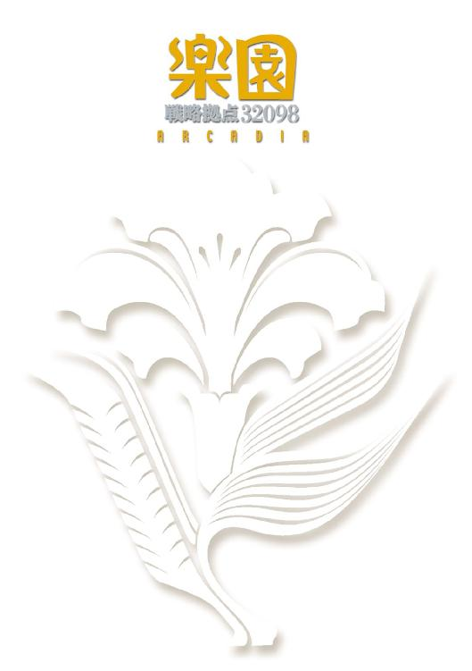
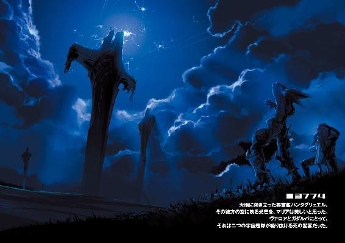
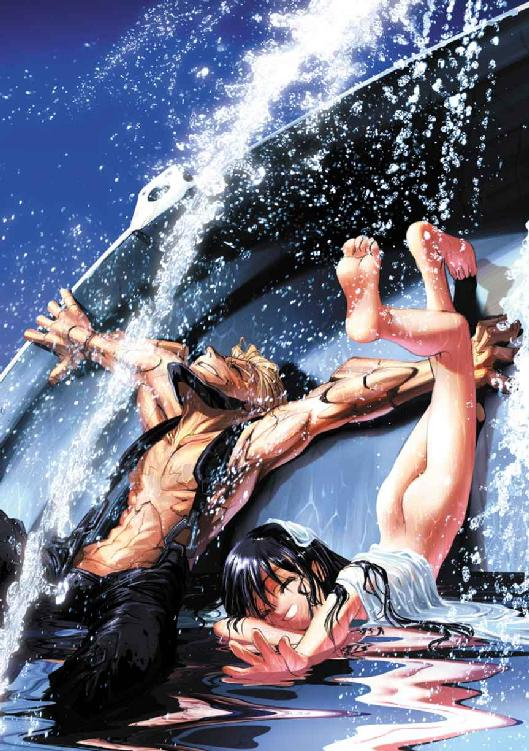
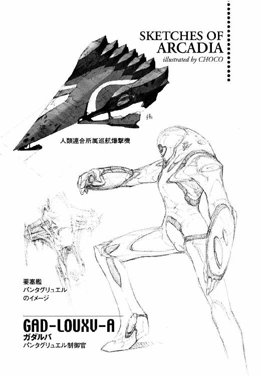
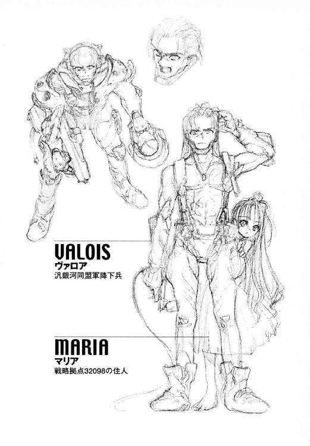

| 戦略拠点32098 楽園 | |
| 長谷敏司 | |
| KADOKAWA / 角川書店 (2014) | |



戦略拠点３２０９８
楽園
長谷敏司

角川スニーカー文庫
本作品の全部または一部を無断で複製、転載、配信、送信したり、ホームページ上に転載することを禁止します。また、本作品の内容を無断で改変、改ざん等を行うことも禁止します。
本作品購入時にご承諾いただいた規約により、有償・無償にかかわらず本作品を第三者に譲渡することはできません。
本作品を示すサムネイルなどのイメージ画像は、再ダウンロード時に予告なく変更される場合があります。
本作品は縦書きでレイアウトされています。
また、ご覧になるリーディングシステムにより、表示の差が認められることがあります。


PAN-GALACTIC UNION
Ⅰ 楽園
「悪い夢を見ていたの」
ベッドから体を起こすと、マリアは微笑んだ。ガダルバが心配そうに彼女の顔をのぞき込んでいたからだ。彼は、心配事があると眼球の青いレンズを三〇度右回転させる。
「マリア。体は大丈夫か？」
平板な調子でガダルバは言う。彼は必要なときしか喋らないけれど、磨いた金属でできた丸い頭の、真ん中にすえつけられたレンズの目は噓をつかない。うれしいときには一〇度左へ、驚いたときには右回りに一回転。
マリアはガダルバの顔に触れた。鉄の皮膚は頭から太い首へ、がっしりした肩と胸へと広がっている。その灰色の頰は、いつも冷たい。
「おはようガダルバ。もう平気よ」
彼女が笑うと、ガダルバの青い目玉も左に一〇度傾いた。
木のベッドから降りると、彼女は二人の小さな家のドアを開く。
「少し、外を歩いてくるね」
太陽の光の白い切片と、若々しいにおいを運ぶ風が部屋に飛び込んできた。
あまりのまぶしさに思わず目をかばい、彼女は指の間から見える景色に心躍らせる。
青く深くどこまでも広がる空に、波打つ緑の草原。そして、輝く白い雲と、それを貫いて星まで届くような幾百本もの黒い鉄の『柱』。
『柱』は、ここを守るために死んでいった多くの戦士の墓標だ。昔、ガダルバが話してくれた。このひとつひとつがかつては宇宙を駆け、星を砕いた戦船だったのだと。
東から丘に向かってびゅうと吹き抜けた風が、ふもとのススキの原っぱを波打たせ風車をゆっくりと回す。
マリアは陽の光を浴びてきらめく碧のじゅうたんに勢いよく飛び込んだ。胸までのくさむらが、むき出しの腕や足を軽く引っかく。
「行っくよお！」
彼女は両手を広げて駆けだした。足に触れる草の感触と、むせ返るような若草のにおいが大好きなのだ。
――マリアにとっては、すべては夢なのかも知れない。
昨日の記憶すらも、この星では夢とかわりない。風になびいてさやさや囁く草原が、急ぎ足に空を流れる雲がここの法だ。人の営みに明日を変える力はない。
〈発話者：ＧＡＤ［ＬＯＵＸＶ］＊Ａ：レコーダーへ自動登録〉
頭の裏に、制御系からの告知が流れる。センサーが音声をとらえたのだ。ガダルバは驚いた。自分はいつから、ひとりごとを声にするようになったのだろう。
部屋の隅には、大きな板が立て掛けてある。花が芽吹くたび何度も書き加え、ほとんど真っ黒になった金属板の地図だ。
大切なものはいつも、とらえようとしても指の間からすり抜けてしまう。だが、あきらめず追い続ければ、断片だけは残してくれる。
鋼材を折り曲げて作ったイスに体をあずける。
そして、ガダルバは懐かしいあの時を、彼女のかわりに思い出すのだ。
■0014
その日も、マリアは夕暮れまで帰らなかった。豆と食べられる野草でポケットをぱんぱんにした彼女は、ガダルバが待っていたのを知ると悪びれた様子もなく笑った。腕と足の薄い皮膚に、いくつも引っかき傷を作っていた。煮立った鍋にマリアが今日の食糧をぞんざいに投げ込んだ頃、空には太陽のかわりに幾万もの星がまたたいていた。
ガダルバは、今日もマリアが水で煮た豆を食べるのをじっと見ていた。脳の一部を除いて全身を機械化された彼には、食事の必要がない。マリアは毎日食べる。彼には、そのことの方が不思議だ。
「今日はね、東に七つ流れ星が落ちたの」
黙って座っているガダルバに、彼女は話しかける。広角感知センサー網が、テーブルの下で彼女が足をぱたぱた動かしているのを知覚した。
「あ、また落ちた」
戦闘機のキャノピーから切り出した窓ごしに、夜空を斜めに切り裂く流星が見えた。正しくは個人用降下ポッド。この惑星の防宙線で散った戦士のなれの果てだ。
もし、この天体ショーの正体を知ったら、マリアはこんな風にはしゃいでくれるだろうか。
「ガダルバ。なに心配してるの？」
食卓に向き直ると、高機能レンズの画像に、マリアの大きな目が映っていた。
「心配事など、なにもない」
マリアは頰をふくらませた。
「ガダルバのうそつき」
どうして彼女に自分の考えていることが分かってしまうのか、ガダルバには理解できない。
「噓をついたことを認める。流星が近くに落ちた」
「ふうん。じゃあ、この星の住民代表として私が様子を見に行かなくちゃね」
ガダルバは窓の外をセンサーで探査した。ポッドの落下地点までは遠くないし、燃え尽きた残骸には危険などないだろう。
だが、その流星はまだ生きていたのだ。
ヴァロワはハッチを蹴り開けて、赤熱したポッドからはい出した。
「くそっ！ リッキーのバージョン四なんかを隊長にするから、こんなことになるんだ」
最悪だ。頭痛と強烈な悪寒がした。脳の温度が上がりすぎているのだ。ヴァロワは反射的に、装甲に覆われた肩をさする。意味のない行動とは分かっているが、彼が体を機械化したのは一〇歳のときだ。一度刷り込まれた行動様式は、そう簡単には変わってくれない。
ポッドは半ば近く茶色の地表にめりこみ、猛烈な勢いで湯気を立てていた。降下兵用のポッドには、最低限度の冷却設備しか積んでいない。全身の八割以上を機械化した降下兵は暑さ寒さを感じないからだ。温度センサーを神経に直結するような、意味のない処置は受けていない。
彼は検知器類の動作をチェックする。続いて内装火器。自己診断の結果が良好なのを見て、彼は胸をなで下ろした。
大気の組成は呼吸に問題なし。放射線なし。気温も平均的な地球型。ヴァロワは生命維持装置のレベルを最低限度まで落とし、ヘルメットを投げ捨てた。
みるみる、頭部の温度が適温に戻ってゆく。夜風をこんなにも心地よいと思ったのは初めてだ。
地上に最低限のレーダーがあれば、降下を見逃すはずがない。ポッドの熱反応は、地平線の向こうからでも観測できるだろう。
「敵さんがやっきになって守る謎の惑星に、降下兵ひとり。装備なしかよ」
ヴァロワはため息をつくかわりに肩をすくめた。ムービーで覚えた、リッキー・ヤングの物真似だ。肺も喉もなく空気吸引孔で呼吸する降下兵には、ため息をつくこともできない。
汎銀河同盟と人類連合の戦争は、起源である『地球』を巡る聖地回復運動として始まった。そして、開戦から一〇〇〇年以上経ち、八つの居住可能惑星をだいなしにして、いまだ続いている。〈拠点３２０９８〉と呼ばれるこの惑星を、汎銀河同盟軍は戦略要所であるとしていた。周辺宙域で撃破した敵戦艦が皆、曳航されてここに着陸しているからだ。
だが、この場所については何も分かっていない。観測しても、都市もない再生工場もない。なのに降下して調査しようとすれば、人類連合軍が激しい抵抗を見せる。地表に突き立つように着陸した艦が、なぜか野ざらしで放置されているこの星をヴァロワたちは『戦艦の墓場』と呼んでいた。
「......待てよ。何かの間違いで、ひとりくらい助かってるかも知れねえな」
ヴァロワは水蒸気をもうもうと噴き上げるポッドに、意を決して上半身を突っ込んだ。仲間の識別コードを確認する。全員の表示が『消滅』になっていた。Ｒ７７７特別降下チームは、彼を残して全滅した。
「くそ！ さすがのラッキーも打ち止めってことかよ」
恐怖と腹立ちを紛らわすため、ポッドを蹴った。七二単位時間前に編成されたヴァロワたちＲ７７７特別降下チームは、運がいいヤツを寄せ集めたような部隊だった。決行前から幸運の女神にゲタを預けるくらい、今回の作戦が無茶だったってことだ。敵陣に一〇万キロも切り込んで強制降下なんて、何で決行許可が下りたのかさっぱり分からない。
「観測によると、人類連合軍はこの惑星の衛星軌道にすら近づかず、ましてや交通はまったくない。連中は何らかの理由でここに降りられない。つまり、ふところに潜り込めれば、そこは安全地帯だ」
ヴァロワの記憶レコーダーに、作戦提案者でもあるランドル二尉どのの作戦指令が残っている。顔も声も装甲のカラーリングも、リッキー・ヤングのバージョン四で統一されていた。バージョン四は無謀兵士の代名詞だ。初めて会った小隊長の腰にリッキーよろしくレーザー刀が装備されているのを見たとき、隊員の半分が天を仰いだ。作戦内容を聞いて、全員が死を確信した。
拠点３２０９８、つまりこの惑星を中心に布陣した人類連合軍と、汎銀河同盟軍は三年もにらみ合いを続けている。三回も惑星の公転に付き合ったということだ。一巡り目は地の利のある敵に、散々に戦力を削られた。二巡り目、同じ手段が通用すると思っていた連中は後悔することになった。今、戦線は完全に膠着している。だが、この拠点に何があるのか分かりさえすれば、軍はもっと思い切った作戦を立てられる。成功すればランドルは英雄だっただろう。
これから第五陣まで降下が行われる作戦だが、後続の一〇部隊を合わせても、ここの土を踏めるのはあとひとりいるかどうか。そのくらい、この星の防宙線は厳しい。
「......敵は二億、立ち向かうはたったひとりの降下兵、なんてな。まるでリッキーの新作だぜ」
視覚の感度を最大まで上げても、友軍のポッドが降りてくる様子はない。装備を積んだコンテナも宇宙塵になったのだ。いま敵地にひとり、まるごし同然で立っていることを知って、ヴァロワは笑い出しそうになった。ムービー並みの絶体絶命だ。
――距離三二〇〇の地点に金属反応。サイズは人間大。
彼は視覚の望遠機能を作動させた。
「あのバカ隊長が！ やっぱり未改造の地表はカモフラージュじゃねえか」
接近しつつあるのは、滑らかな装甲板で全身を覆われた体格のいい強化兵だ。顔面には青いレンズがひとつだけ、鼻や口のようなお飾りの器官は一切ついていない。制御官と呼ばれる、戦列艦や機甲部隊の指揮をとるために調整された特殊な強化兵だ。考えたくもないが、近くに大戦力が待機しているのだろう。
「何が『惑星上は安全地帯』だ。地獄で士官学校からやり直しやがれ！」
ヴァロワは撃たれる前にと、急いで両手をあげた。情けないが、この状況では降伏以外に道はない。
制御官の身体能力は降下兵ごときより遥かに上だし、何よりその一体成型された特殊装甲を撃ち貫くには、手持ちの火器では役不足だ。高価な装備をまかされる兵士には、それに見合った金のかかる強化が施されている。
「カッコ悪いな。ムービースターじゃなくて良かったぜ」
彼はシュウシュウと湯気をあげるポッドの脇で、両手をあげたまま待った。
ヴァロワの視界に、火器照準されたことを告げる警告が明滅した。
あきらめ半分でヴァロワは空を見上げた。死を前にして、宇宙空間にいたときより、たくさんの星が見えた。理屈では有り得ないことだが、漆黒の宇宙は戦艦の窓から見るより広く、星は明るく感じた。ヴァロワはセンサーで、自分の感覚が正しいのか観測してみた。今回も、『知識』の勝ちだった。
「ねえ、ガダルバ。流れ星って何でできてるんだろうね」
幻聴にしては鮮明に、人類連合なまりの共用語が聞こえた。
声の方角を拡大してみると、強化兵の脇に一〇歳くらいの少女がいて、原生植物の茎をぶんぶん振り回していた。ヴァロワは、つややかな長い黒髪も、肉の重みを感じさせないほっそりした体も、脳の疲労による幻覚だと思った。軍の拠点に生身の女の子は、場違いすぎる。
「ねえガダルバ、本当に聞いてる？」
制御官が、彼に青いレンズの眼を向けたまま、少女の問いに答えた。
「誰かいる」
強化兵が、今さら気づいたふうを装って、平板な機械音で言った。
「本当？」
驚いて、少女が強化兵を見上げる。敵の多目的レンズ眼は、いつでもヴァロワをひき肉にできるよう、照準に捕らえたままだ。
強化兵の姿が、もう倍率一倍の視覚で確認できるところにいた。
「......殺せよ。俺も脳以外はほとんど金属なんでね。狙うならここを狙いな」
ヴァロワは精一杯凄みをきかせて言った。敵が殺す気なら命乞いは無駄だし、生かしておく気なら少々のことは許される。だったら、悔いのない最期を演じるのも悪くない。弾丸の嵐を身ひとつでかいくぐる降下兵ともなれば、酔える死に方を何通りも考えておくものだ。
ヴァロワは手をあげたまま、親指で頭を指し示した。
「あんたの豆鉄砲じゃ貫通できないかい？」
少女が、背の高い草むらから顔を出した。期待に満ちた眼でのぞき込まれているうち、ムービーから借りたセリフが陳腐なものに思えてきた。
■0105
ガダルバは結局、撃たなかった。降下兵など、いつでも処理できる。それに、兵士ではない今の彼が、敵兵をどう扱えばよいかも分からなかった。
数日が過ぎた。あの男は今、ガダルバと彼女の家に住んでいる。
認識番号一一二―六―四六八三四五二三。名前はヴァロワ。
装甲を青と灰色でペイントしたあの降下兵は、なにかと遠出をしたがった。食べ物を探してくるとか、廃材を取りに行くとか。ガダルバたちが自由にさせているのをいいことに、この星の調査をしているのだ。
「ヴァロワ、また行っちゃったの？」
「ああ。三時間前に出発した。食糧をさがすそうだ」
テーブルの上の果物がなくなっているのを見て、彼女がガックリとうなだれた。
「まただわ！ ここまでやってるんだから、今日こそちゃんと食べれるものを持ってきてよね」
ガダルバは「すまない」と答えた。
「ねえ、ガダルバ。ヴァロワはガダルバのこと知ってるの？」
テーブルから乗り出すようにして、マリアが彼の顔をのぞき込んだ。
「なんだか二人、仲が悪いみたいだわ。ほら、お互いのこと何も知らないのにけんかなんてできないでしょ。きっと何かあったのよ。そうでしょ？」
彼女が得意げに、小鼻をひくつかせる。どうして、感情を読まれてしまうのだろう。
「私に話してみなさい。きっと、なんだってうまくいくんだから」
ガダルバは、あの降下兵を意識しているのだ。
彼の言葉は機械音だが、ヴァロワの声は、表情豊かだ。団体行動が基本の降下兵たちはコミュニケーションの必要上、個性を持たせるため声の調子を自分で調節できる。
自分は、降下兵が人間らしく見えることを、うらやんでいるのだろうか。
「私、朝ごはんをとってこなくちゃ」
返事はないとあきらめたか、マリアがテーブルから降り、ワンピースの前についたほこりを払った。部屋の隅に置いてある、鏡がわりの磨いた金属板をのぞいて、前髪を直していた。
「帰りは、遅くなるのか？」
楽しい表情を作って、彼女が振り返る。
「ガダルバも、行く？」
どの方向にも植物か『柱』しかない。ガダルバは視覚を望遠に切り替えた。ヴァロワの姿はない。金属反応も探知できない。かなり遠くにいるのだ。
昼間だというのに、またひとつ流星がどこかに落ちた。歌をうたいながら前を歩くマリアは気づかなかったようだ。ガダルバは彼女の弾む後ろ姿を見守りながら、今後のことを考えていた。
この星にふたりしかいなかったとき、ガダルバが口を閉ざしていれば彼女は空の上の戦いを知らずにいられた。だが、今はヴァロワがいる。マリアに伝えるべきなのだろうか。今この星の周りでは人間が、人類連合と汎銀河同盟という二つの陣営に分かれて戦争をしていると。流れ星が落ちるたび、何十、何百人の兵士が死んでいるのだと。
ガダルバにはできない。知ればきっとマリアは悲しむし、彼女がどんなに心を痛めようと戦いは決して終わらないからだ。
「マリアは、もしも私とヴァロワが戦っていたら、どう思う」
ガダルバの問いに、マリアは振り返って「やめさせるわ」と答えた。
「だって、けんかをしていたってつまらないもの。きっかけだって、どうでもいいようなことに決まってるわ」
ガダルバが見上げると、青空にまたひとつ、流星が溶けて消えた。
マリアは言う。
「知らない人どうしがけんかなんてできない」
けれど、自分もヴァロワも「知らない人間同士でなければ殺し合いは辛すぎる」のだと知っている。ガダルバは、マリアには今のままでいて欲しいと思う。ヴァロワはどうだろう。
そのころ、ヴァロワは途方に暮れていた。調査した限り、本当にこの星には何もないのだ。地中に天然資源以外の金属反応はない、通信を行っている形跡もない。地下の温度も正常。地磁気に乱れもなし。大地に突き立つ戦艦の残骸に何か秘密があるかと、重点的に付近の地中を調べてもみたが結果は空振りだった。
見渡すと、『柱』の影は地平線の向こうまで落ちている。この星には動物も昆虫もいない。この異常な生態系には意味があるのだろうか。
「のんびり花なんか見てる場合じゃねえんだけどな」
腑に落ちないのは、艦の残骸付近に必ず花畑があることだ。もっとも、花に異常があるかどうかなんて兵士のヴァロワに分かるはずもない。彼はサンプルとして黄色い花を一輪ちぎって手に取った。
立ち上がって、遠く広がる緑の地平線を眺めた。あのボロ家で、またマリアはひとつ覚えの豆の煮物をテーブルに置くのだろう。そして、白い湯気を立てるそれをつまみながら、彼を質問責めにするのだ。彼女に思い切った尋問をしたいのは、ヴァロワの方だというのに。
ヴァロワがままごとみたいな暮らしに付き合っているのは、制御官の目が光っているからだ。撃ち落とされた仲間には悪いが、様子を見ておとなしくしているから、彼は今、なんとか生き延びている。
「そろそろ帰るか」
ヴァロワは足下に置いていたズダ袋を取り上げた。歩き回った先で、食べられそうなものをさがして採ってきたのだ。自分が「帰る」と言ったのに気がついて、恥ずかしくなる。きっと、決死の覚悟で降下してきたのに、あまりにのどかで拍子抜けしたせいだ。
丘の上のバラックに戻ったらもう夕方で、陽も落ちかかっていた。板きれで作ったそれは、今にも崩れそうだ。ヴァロワの生まれ育ったスラムにも、ここまで露骨に間に合わせの家はなかった。
ドアを開けると、案の定、マリアが鍋で豆を煮ていた。彼女は澄んだ目でヴァロワを見上げて「おかえり」を言った。彼は「ただいま」と返せず、くぐもったうなり声をあげた。
ガダルバ、あの制御官型が、レンズをくるくる回しながら、行儀良く廃材で組んだイスに座っていた。
あの日、この家に初めて連れてこられたとき、ヴァロワは拘束や尋問を覚悟していた。だが、二人は彼を仲間のように扱った。今も、彼を自由にさせている。彼には分からないことずくめだ。高級将校であるはずの強化兵と少女をつなぐ糸も、まったく見えない。
マリアが注意深く鍋をかたむけて湯を切り、薄緑色の豆はきわめて大ざっぱに皿に盛られた。ヴァロワは肩をすくめた。
「不潔な環境だぜ。こんな雑菌だらけの食い物をよく食えるな」
信じられないことに、ここでは地表から湧いた水をフィルターも通さず使用している。マリアは小さな手で器用に豆の皮をむき、口の中に放り込んだ。まったく調味料をつかっていない、自然のままの味だ。軍の携行食の一番まずいのでも、これよりはマシだった。
「だったら、食べなきゃいいじゃないの。......でも、今日はその時季はずれの珍しいリンゴに免じて許してあげる。感謝するのよ」
ガダルバが、廃材から切り出したナイフでリンゴの皮をむいていた。ここでは何でも廃材から作るのだ。自分で食いもしないくせに、強化兵はリンゴの皮むきがうまかった。
「今日は、なにか見つかったの？」
マリアが、テーブルの脇によけた豆の皮を人差し指でもてあそびながら尋ねてきた。
「リンゴの木を見つけただけさ」
少女の無造作な問いに、彼もざっくばらんを装って答えた。
戦艦が降りるのはドックで修復するためだと思っていたが、それらしい施設は見あたらない。彼の見る限り、スクラップになった船はこの星にやって来て、ただ野ざらしで朽ちている。そうして、大地に突き立つ『柱』となった戦艦はヴァロワの数えただけで四二一隻あった。惑星全域を調べれば、単位は万に届くだろう。
「お嬢ちゃん。もっといいもん食わねえと、大きくなれねえぞ」
マリアは返事がわりにガダルバがむき終わったばかりのリンゴをむんずとつかみ、ヴァロワが止める間もなくかぶりついた。
「おい！ ひとりで食っちまうつもりかよ」
「ヴァロワは私の作った料理を食べたんだから、これは私がもらうんだもん」
マリアが頰をふくらませ、胸の前でだいじそうにリンゴをかかえていた。怒っているらしい。ヴァロワには少女をどう扱っていいかわからなかった。戦場のマニュアルには、こういう事態に対処する方法は記載されていない。
「まったく、下らねえ星だぜ」
■0309
ヴァロワは視界に時計を表示させ、作戦開始から三〇九単位の時間が経過したことを知った。覚悟はしていたが、救援はまだ来ない。もう軍では部隊が全滅して、彼も死んだことになっているのだろう。
汎銀河同盟軍の標準時間で、着陸から二九五単位になる。惑星の自転周期は約二〇単位。惑星上の一日の長さはそこの自転周期と同じだから、もう一五日だ。
ヴァロワを当惑させたのは、ここに暦がないことだった。
けれど、日が昇り沈んでゆく営みは、この上もなく確かなものを感じさせる。彼にもときどき、使い慣れた標準時と原始的な日時計の、どちらが本当の暦なのか分からなくなる。
腑抜けた自分の感覚が腹立たしくて、彼は探索を放り出し、雑草生い茂る斜面に転がった。
今思い出しても、生きた心地がしない。五日前の夜中だった。ガダルバの動きがないのをさいわいと、マリアの部屋に近づいたら、危うくレーザー刀で斬られそうになったのだ。
感情のない声でやつは言った。「私は彼女を守る」と。
あの男は眠らない。隙がないから、ヴァロワは仕方なく付き合っている。ただ、それだけだ。
「当たり前だ。今さら、兵隊やめれるわけねえだろ」
上流階級向けリゾートでも滅多にない、豊かな自然が敵のものだと思うと、劣等感が刺激される。平穏であることが、苦痛だ。
ヴァロワにとって、戦うことは世界を勝ち取ることだった。
資源も枯れかけた星のドーム都市で、彼は生まれた。人工子宮から、誰に望まれもせず。
流産の危険がある上、母体にも負担をかける昔ながらの出産は、もう行われていない。親は受精卵を出産業者に預け、数ヶ月後に赤ん坊を受け取る。来なければ、産まれた子どもは『みなしご』となる。ヴァロワはそうして、返品されたオモチャのように、保護院で引き取られた。
そこのことは、ほとんど記憶に残っていない。子どもを監督する教師は、成長後の彼らから精神的苦痛を理由に訴えられないよう、極めてお役所仕事的にヴァロワたちを育てた。五年間の保育後、『みなしご』は外の世界に放り出される。業者は『品質保証期限切れ』まで、タチの悪い連中に因縁をつけられないよう、保護院にみなしごを囲い込むのだ。
最低限の保障だけを与えられ、街に出た五歳の彼はまずムービーシアターに入った。その傑作『レーザーナイフの海』が、リッキーとの出会いだった。
目を開くと、一〇倍望遠の青空に、また兵士が流星になって落ちた。こんなやるせない空は、ムービーにも見たことがなかった。
どうしてこんなにも、ガキの頃のことを思い出すのだろう。きっと、ひとりきりだと自分自身の他に見るものがないからだ。
森で採ってきた実にかぶりつく。オレンジ色の果肉は酸っぱく、種だらけでうんざりする。この星に来るまでは手の届かない高級品だったが、天然食品の味は、はっきり言って拍子抜けだ。
ガキの頃だって腹が減ったら、身分証を見せれば福祉所で食糧を受け取れた。工場で合成された食品は味気ないが分量もあって、メシを食うってのはこんなものだと思っていた。あの頃、一〇歳まで彼は高層建築の底の地面にへばりつくようにして、灰色のドームの天井を見上げていた。いや、その上の宇宙しか目に入らなかった。
軍に入れば、ニセモノの空でなく本当の世界に、星の海に行ける。もっと違うものが食える。兵隊になれば仲間ができる。リッキーとヤンみたいな、命を預けられる相棒が。
市民課で職業登録し、機械化降下兵となった彼の身長は、生身の頃の一三〇センチから一九五センチに伸びた。顔と声は、リッキーのバージョン七で統一した。銃や機材の扱い方はマニュアル化されて、ひと通り戦闘チップ経由で脳に入っていた。彼が初めて配属された部隊にはヤンが二人、バージョン違いのリッキーが四人いた。
リッキーの作品でどれが一番の傑作か？ そんな話題で盛り上がった部隊は、最初の戦闘でヴァロワと小隊長を残して全員鉄クズになった。そして、彼は突入した巡洋艦の機関部を破壊した功績が認められて、青銅星章を受けた。全員がリッキーのように撃ち、ヤンのように敵の首をへし折ったが、生き残れたのは二人だった。それが降下兵だと知った。
「慣れちまったら、気の抜けた暮らしが一番いいってことかね......」
兵士の錆びた心が、きしきしと軋んだ。
バカバカしい。泥水みたいな街で空を見上げていた情けない一〇歳のガキが『正しい』とでも言うのか。あそこから抜け出すために、ヴァロワは安くないものを支払ったのだ。
軍歴一八年。出撃六三回。銀星章を受けること一回。青銅星章を四回。名誉戦傷章八回。汎銀河同盟軍Ｆ二二三降下兵団所属。三曹。それが今の彼だ。リッキーの顔で、彼は九七人殺した。
■0421
ヴァロワがはじめて『柱』の降下を見たのは、作戦開始から四二一単位時間後。この星の時間の流れに慣れてしばらく経った、夜明けどきだった。
「ガダルバ、ヴァロワ。柱が落ちてきたわ」
朝の散歩に出ていたマリアが駆け込んできた。ヴァロワは眼球のあたりをこすりながら、起きあがった。脳に短い休眠をとらせている最中だったのだ。
ドアを開けると、空の半分が黒かった。残りは朝焼けの紫だった。
その威容に声も出ない。世界が、無機質な漆黒の影に食われたみたいだ。
戦闘艦だった。艦首から艦尾の推進ノズルまで五キロはありそうだ。
空を押しつぶすような圧迫感、艦首の位置は、地表から高度五〇〇メートル。もう、目の前には黒い船体以外の景色は見えない。
ゴウ、と轟音と共にもの凄い風圧が正面から襲いかかってきた。ススキの草原が一瞬で根こそぎ倒される。体重の軽いマリアが、ワンピースをはためかせながら彼の方にふっ飛ばされてきた。
彼は重心を低くし両脚を最大出力で踏ん張って、やわらかな少女の体を危ういところで受け止めた。すさまじい風力に、彼も吹き飛ばされないだけで精一杯だった。ねじれる空気の荒縄を振り切って必死で後ろを見ると、小屋は屋根を失い、廃材の山と化していた。艦首が地面につくその直前、ヴァロワは必死でマリアを腹の下にかばって地面に伏せた。
烈風と、四つんばいで地面にしがみつくだけで精一杯の地響きが、巨大な船の着陸を告げた。衝撃が波紋となって広がり、地面が液体のように波打つ。ススキの野原は土ごと根こそぎ持ち上げられ、彼の顔や背中に、弾丸のように跳ね飛んできた。
ヴァロワは、風の正体が姿勢制御スラスターをふかした結果だと理解した。もしも、逆噴射による減速なしで地表に激突していたら、この一帯は巨大なクレーターとなり、三人と小さな家も仲良く蒸発していたことだろう。
丘が静けさを取り戻したとき、緑の草原はもはや跡形もなく消え去っていた。湿った地表が、皮を剝がされた傷跡のようだ。地平線の少し手前に、今は巨大な黒い『柱』が突き立っていた。
船体のブリッジにあたる部分に、直径一〇〇メートルはあろうかという大穴が空いている。推進器はまったく推力を生んでいない。灯火すらほとんど残っていない。よく見れば、装甲のそこかしこに、直径二〇メートルを超える貫通孔が空いていた。
最後の地響きと烈風で、家は何枚かの板きれに分解され散乱していた。弱い地盤に土台も作らず建てたものが、あれに耐えられるはずもない。
しりもちをついたマリアが、目を丸くしてきょとんと彼の顔を見上げていた。
「マリア、無事だったか」
小屋の残骸あたりから駆けてきた、ガダルバが言った。丘のふもとの小川まで水をくみに行っていたのだ。
「デカいな。戦列艦か」
「ガトーＹＴ型、重打撃潜宙艦だ」
感情をのぞかせない機械音声が答えた。
潜宙艦は、確率転移航法に用いられるワームホールに船体を隠すことができる、強力な戦闘艦だ。攻撃されるまで位置がつかめない、やっかいな相手だ。ただし再構成される前の潜宙艦からも外の様子は分からないため、攻撃側もシミュレートの結果がどの程度当たるかのバクチ。大火力をもって一瞬で敵の戦列を崩し、味方到着までの数秒間を分厚い装甲で耐えしのぐ。高い戦果を挙げられるが消耗率も極めて高いため、配属兵士の人気は薄い。
「こいつは、着陸できたのか？」
何か起こるに違いないという興奮を胸におさめ、ヴァロワはガダルバとマリアの様子をうかがった。
「残存燃料を使って自動制御で軟着した。推進サイクルは八〇％以上閉鎖されている」
自軍の戦艦だけに、ガダルバの分析は素早く、正確だ。制御官型の強化兵は、この大きさの戦艦の制御をほとんどひとりでやってしまう。それがどれほど途方もない仕事なのか、銃を撃つしか能のないヴァロワには見当もつかない。
「思った通りだぜ。やっぱり、ここには補修のできるドックがあるんだな」
地表に突き立った『柱』はあまりに巨大で、このまま放置していいものだとは思えなかった。
「いいや、あの船は二度と空へは戻らない」
ガダルバが言った。ヴァロワは噓だと確信した。貴重な資源を捨てる理由がないからだ。船は高価な合金の塊だし、使えるパーツも残っているだろう。
「制御官のダンナが言うんだからそうなんだろうさ」
見え見えのデタラメは、ヴァロワの疑いを強めただけだ。
マリアがガダルバとヴァロワを指さして笑った。
「ヴァロワもガダルバも、ドロだらけ」
彼はチッと舌打ちの音源を鳴らそうとして、やめた。楽しいことだけを探して動き回る、彼女と目が合ってしまったからだ。
「嬢ちゃんだって、人のこたぁ言えないと思うぜ」
服も顔も手足も泥だらけだと気づいて、少女が泣きそうな顔でヴァロワたちを見た。
「行ってみればはっきりするさ。止めたいなら力ずくでやりな」
ヴァロワは『柱』に向けて顎をしゃくった。何のしぐさか分からなかった様子で、ガダルバとマリアは歩き出すかわりに、ふたりで顔を見合わせた。
艦は、果物にナイフを刺したように、地表に対して垂直に艦首をめりこませていた。軟らかい地盤は潜宙艦の重量を支えきれず、船とともに深い地中に引きずり込まれていた。近づいてみると、あまりに大きすぎて、かえって人工物に見えない。何万年も前からここに鎮座していたかのような、奇妙な風格を醸し出していた。
ヴァロワの見る間にも、艦首は今も静かな音を立て、自重でゆっくりと地中に沈みつつあった。
「よく倒れずに刺さったもんだぜ」
彼は感嘆の声をあげた。これがバランスを崩して倒れてきたら、ひとたまりもない。
「ここに降りる艦は、地表に大きなダメージを与えないよう計算して降下する。自力で航行できないほど損傷している場合は、他の艦が曳航するときに最低限の修復をする。この艦は艦首衝角で、貫通しない程度に地殻に穴を空けたようだ」
ガダルバが、今度は妙に丁寧に説明した。ガダルバとマリアも、彼についてきたのだ。
「ダメだな。こりゃ生き残りはいないだろ」
ヴァロワのひとりごとに同意するように、強化兵が重々しくうなずいた。
「中に入る。付いて来るか？」
もちろん、この申し出に異存はない。
ガダルバは艦に近づくと、肩口の装甲を反転させてライトのようなものを数回点灯した。無限に上にのびてゆくような戦艦の外壁の彼方から、ワイヤーが一本、音もなく降りてきた。
マリアひとりを残し、その簡単な昇降機につかまって内部に侵入すると、船内は真っ暗だった。機械の視覚に明るさは問題ではない。ただ、普通の通路が深い縦穴になっているのが、なんとも不便だ。壁に緩衝素材など貼っていないので、足を踏み降ろすたびにガチャガチャ音が鳴る。空気清浄機能の死んだ、淀んだ艦内の静寂を破る、それは唯一の生だった。
艦内に入り込んで一〇分の一単位ほど経った頃、ガダルバが立ち止まった。強化兵が近づくと、扉は開いた。
「着いた。ここだ」
そこは静かな霊安所だった。床に数十個のカプセルが固定されている。中には兵隊が入っていた。いつ動き出してもおかしくない眠っているようなのも、熔けた金属塊と変わらないのもいた。
敬虔な気持ちが、一瞬だけわき起こった。敵にも味方にも、死だけは平等だ。ヴァロワは小さく胸の前で十字を切る。ムービーで覚えたしぐさが、少しだけ気持ちを軽くしてくれた。
「悼んでくれるのか？」
「勘違いするな。あんたらのためじゃない、俺のためだ」
無機質な死体が明日の自分だと考えないための、おまじないだ。心の底から祈ったことなどないが、人間らしい真似をしていれば、楽になる。
「運ぶ。手伝え」
そのカプセルに横たわっていたのはガダルバだった。いや、正確にはガダルバと同じ制御官型の強化兵だ。
「搬送用のエレベーターがある。カプセルをそこに全部積んで、外に出る」
反射的に「了解」と答えてしまい、ヴァロワは肩をすくめた。ガダルバが、制御官の死体の入ったカプセルを床から外した。
死体を扱うのは得意じゃない。ヴァロワの体は鋼材の骨格だが、近くにいるだけで、胸がきしむように辛くなる。
兵士の大部分は、体の九〇％以上を機械化している。生身の部分の少ない方が兵士として性能が良いからだ。汎銀河同盟と人類連合の両軍は条約で、機械の体を制御するのは、絶対に生身の脳でなければならないとした。敵を殺す引き金を引く最後の判断を、機械に委ねないためだ。
ガダルバたち人類連合の制御官は、最低限の意思決定に必要な、脳の一％程度の領域しか生身を持たない。人工子宮から出たと同時に脳を切除され、生身の体がどういうものかすら知らないのだという。そんなガダルバを人間と呼べるのか、ヴァロワにはわからない。
「マリアには、戦争のことは話さないでくれないか？」
作業中に突然、ガダルバが抑揚のない声で言った。
ヴァロワは答えられなかった。状況がわからなかったからだ。拠点にいる人間が戦争を知らないはずはないし、マリアが軍の関係者でなければ制御官が従う理由もない。
三〇個のカプセルには、同じ顔をした男が一組いた。整った顔立ちに青い目、まったく同じように皮肉げに唇を歪めている。ムービースターに似せて顔を作ったのだろう。部隊に同じ顔の兵隊がいるのは珍しくない。ヴァロワの部隊にも、リッキー・ヤングが四人いた。
エレベーターには、ご丁寧にカプセル搬出用の棚が備え付けてあった。ヴァロワはその周到さに嫌悪感を覚えた。
自分専用の棺桶を持ち歩くくらいなら、生き残るために一発でも多く弾丸を詰め込めばいい。
そして地上に降りるなり、ヴァロワの前で、制御官が何も言わず地面に穴を掘り始めた。
工具は、エレベーターの中に用意してあった。先に銀色の金具がついた白いシャベルだ。動力もコンピューターの補助もない。ただ単純に二本の腕の力で掘る、恐ろしく原始的なものだ。
「ここにカプセルを埋める」
何種類もの精緻な工学の精華である制御官が、原始的な労働を黙々とこなす。その目的ときたら、思わず耳を疑うほど非論理的だ。
「見ていないで手伝え」
ガダルバはヴァロワに向けて、同じ工具を放ってよこした。受け止めると、それはずっしり重かった。死体もカプセルも穴もシャベルも、すべて現実だった。
「正気か？ 死体は重要な資源だぜ」
軍では、死んだ兵士の体は補給艦の船内工場で再加工され、また新たな部品として戦場に戻ってくる。いつ補給が分断されるかわからない最前線では、弾丸などの消耗品にはリサイクルした金属を使い、後方の都市で製造された高品質のものは温存する。死体を埋めて墓を作るのはムービーの中だけだ。
マリアがくすくすと笑った。
「死んだ人は、土に埋めると草や花になるのよ。そんなことも知らないの？」
「嬢ちゃん。俺たちの体は、一〇〇〇年埋もれてたってサビひとつ付きゃしないんだよ」
「何にも知らないのね。柱の下の花は、みんな私とガダルバが埋めてあげた場所から咲いたんだから」
いつの間に持ってきたのか、マリアは工具を抱えて、小さな胸を張った。
「バカバカしい」
「私たちは、植物の種を体に埋め込んでいる。太古の人間のように、土に還るためにだ」
ガダルバが、シャベルで土を搔き出しながら言った。彼が機械音声で言うと、そのヨタ話がまるで真実のようだった。
「悪趣味だな。機械は機械、生身じゃねえ」
ヴァロワは思ったとおりを口に出した。
死体が原子の塵に分解されて何がいけない？ 資源は資源として、生きている仲間を少しでも長くこの世にいさせてやるため活用すればいい。この黒い戦闘艦は、たかだか三〇人の墓には大きすぎた。花だの土に還るだのと、傲慢な話だ。
「それでも、彼らは花になるために降りて来た」
ガダルバが、表情のないレンズの目で彼をじっと見ていた。
「死者は、もう戦わなくていいからだ」
掘りながらヴァロワは、人類連合軍で最も優秀な死体製造機の一族へ、苛立ちを叩きつけた。
「そんなこと、死んでみなきゃ分からねえさ」
戦艦を墓標、死体を花にする方が高級だとでも言いたいのか。贅沢なことだ。同じように撃ち合って、死んだらおまえたちだけが、天然の食い物に囲まれた本物の世界で、花になるわけだ。
こんな話を信じられるわけもないし、万が一事実だとしても、裏付けが取れない。「おまえらは何のために来た」と、死体を尋問すればいいのか？ 勘弁してくれ。
しばらくすると、頭上に雲が集まっていた。もしやと思っていると、一雨きた。『柱』の落下で、気圧に変化が生じたのだ。
雨の中、吹き飛ばされた家の残骸を拾い集めて、マリアたちはまた家を作った。兵隊さんたちを埋めてあげてからヴァロワはずっと機嫌が悪いみたい。ガダルバはいつも通り、何も言わない。『柱』の中で何かあったのだと思ったのだけど、ヴァロワもガダルバも言っていることがばらばらで、よく分からなかった。
家は飛んで行っちゃうし、服もドロドロだし。
マリアは、ぐらぐらするイスに登ると、はぁとため息をついた。
今日は本当にてんやわんやの一日だった。ガダルバが屋根やらおなべやら、扉やイスやらを探し集めてくれて、ようやく家に屋根がついたら夕方だ。
丘を上がってきた夜風が、窓を抜けて彼女の髪を揺らした。窓ガラスは結局みつからなかったから、窓枠から直に風が入る。食卓からはっきり見える『柱』が、濃紺色の夜の左半分を黒く塗りつぶしていた。
「今日のお豆がイマイチなのは、おなべがひしゃげちゃったせいなのかしら？」
マリアはねじれた皿から豆をひとつつまんだ。火の通りがいいのがあったり、ほとんど生のがあったり。今日の煮豆は、ここ最近では一番ひどいデキだった。
「ダンナ、今日落ちてきたのは潜宙艦なんだろ。だったら偵察機の一隻くらい積んでるだろ」
聞いて、ガダルバはレンズを左に六〇度回した。
「ガトーＹＴ型には二隻の小型哨戒艦が配備される。撃墜されていなければ残っているだろう」
「そうか」
ヴァロワは、また小さな豆の薄緑色の皮をむく作業に没頭していった。
『柱』は降りてきた後、しばらく赤や黄色の光を表面にちかちかさせている。マリアは、そのはかない光を見るのが好きだった。星よりも近くて明るいはずなのに、ちょっと目を離すと消えてしまいそうな、不思議な輝き。
雨に濡れて、乾いていた土の塊がまた泥に戻って、雨漏りのかわりにひとつぶふたつぶと落ちてきた。
黙々と、誰もしゃべろうとしない食事は続く。昼から降りっぱなしの雨が、開きっぱなしの窓からぽつりぽつりと飛び込んでくる。
彼女はふと横目で床を見て、そこが泥だらけなのに気づいた。明日にでも掃除しよう。
「ヴァロワも水浴びすればよかったのに」
「俺はいいんだよ」
ヴァロワはテーブルに肘をついてそっぽを向いたまま、皮をむかずに豆を口に放り込んだ。まだ指も顔も泥だらけだ。体を動かすたびに、まだ乾いていない土がべったりと、床やテーブルになすりつけられる。
「私がこまるの！ 明日にはきちんと水浴びするのよ。でないと、家の掃除はヴァロワにやってもらうんだからね」
「どうせ汚れるんだから一緒だろ」
「『どうせ』なんて言ってたら、すぐに野宿してるのと変わらなくなっちゃうわ。きれいに気持ちよくしてなくちゃ」
「現状では柱の角度が悪い。明日、調整のために家の屋根を外すから、そのとき私が掃除してもいい」
「甘やかしちゃダメよ。汚した人がきれいにするの」
マリアが軽くにらむと、ガダルバは軽やかに一〇度、レンズを左に回した。
次の朝、ヴァロワは新調したばかりのベッドから濡れネズミになって体を起こした。窓から見える外の様子は、晴れだ。彼が水浴びに行かないと見越したマリアが、寝ている頭へ、深鍋にくんだ水を思いっきりぶちまけたのだ。目をぱちくりさせている彼に、マリアは不織布の切れ端を手渡した。これで水浸しの床を拭けと言いたいらしい。
「艦載機の残存状況を調べたいと言っていたな」
マリアと盛大に口げんかしていると、様子を見に来たらしいガダルバが彼に尋ねた。
「おうよ」
結局、ヴァロワはおとなしく床の掃除をする羽目になった。マリアが「ルールを守れない人に、親切にしてあげる必要なんてないのよ」と、腰に手を当てて頰をふくらませて。それで話はおしまいだ。制御官さまは、あの嬢ちゃんのいいなりだ。エリートの思考パターンは、下っ端には理解できない。
おかげで、昨日のあの『柱』に入ったときには、もう昼近くだった。
「まさか、これだけ残ってるとはね」
ヴァロワの声が薄暗い格納庫に響いて、消えていった。潜宙艦の艦載機格納庫は、マリアの家がすっぽり五〇〇個は入りそうなほど巨大だ。かつては床だった壁面に、ちょうどシャツに縫い止められたボタンのように、艦載機が固定されていた。
ガダルバが信号を発すると、固定具に牽引されてスクラップ寸前の戦闘機がヴァロワたちの前に来た。
「これはどうだ。修理すれば大気圏を離脱できる」
「勘弁してくれよ。制宙戦用の戦闘機だろ。こんな航続距離の短い羽根じゃ、友軍の艦隊まで辿り着けねえ。どうせなら、爆撃機をさがしてくれ」
正直言って、艦載機を見せてくれるどころか、ここから脱出するための修理まで手伝ってくれると聞いたときは耳を疑った。ダメで元々、頼んでみるものだ。エリートが何を考えているのかは、さっぱり分からない。
「望み薄だ。戦術上、飛べる爆撃機を抱えたまま潜宙艦が沈むことなど有り得ない」
指揮型強化兵の、ドーム型の顔の中心で、レンズが踊るように回転した。
「いや......巡航爆撃機が残っていた。型落ち品で一緒に廃棄されたようだ。損傷もほとんどない」
「知らねえ兵器だな。人類連合にはそんなものがあるのか」
「敵の位置がほぼ特定できているときに先制攻撃や戦線確保に使う、高速の爆撃機だ。一直線に敵に接近し、機雷やミサイルを撒けるだけ撒いて帰還する」
聞いても、ヴァロワには戦術の話なんか分からない。
「どうしてそんなものが残ってるんだ」
「巡航爆撃機は高速だが運動性が最悪だ。迎撃を受ければ高い確率で撃墜される。維持費がかかる割に運用の難しい機体なので、はじめから使用しない制御官も少なくない」
「速度はどのくらい出るんだ？」
「最大で光速の一二・五九三一％」
ヴァロワは口笛を鳴らした。
「べらぼうだな。そんな機体がなんで墜ちるかね」
「最小旋回半径が、この星の直径より大きい」
「ほとんどまっすぐにしか飛べねえってか」
「巡航爆撃機は人類連合軍では特攻兵器とされている」
ヴァロワは嫌悪感を、笑い声のパターン三〇三―七（鼻で笑う）にのせた。人間をミサイルに乗せて爆撃機か。
「それでいい。無謀な降下作戦で降りてきたんだ。特攻兵器で帰るのもオツなもんだろうさ」
見上げると、機体は黒光りするナイフのように尖っていた。翼は巨大な推進ノズルの脇に、恥ずかしそうにへばりついている。艦載機というより、本当にミサイルだ。これに乗るのかと思うと、ぞっとした。
「運び出すか？」
ヴァロワは「そうしてくれ」と言葉にするかわりに、ガダルバに親指を立てて見せた。ガダルバは何の反応も返さず、制御盤を操作した。
艦載機の修理はガダルバも手伝った。彼が手を貸してやらねば、何年経っても修理は終わりそうになかったからだ。
生き残っていた整備車両で『柱』から巡航爆撃機を運び出すと、丘のふもとに作業場を作った。全長五〇メートル、全幅一二メートルの爆撃機を覆うように建てると、ガダルバたちの家より何十倍も広い簡易工場になった。マリアは、作業場の大きさと比べて家がみすぼらしく見えるようになったと、すねてしまった。ヴァロワは、設計を彼にまかせて単純作業ばかりしていた。今ではあの降下兵も熔接に関してはちょっとした整備兵なみだ。建物と作業台を作るだけで、一五日かかった。先が思いやられる。
しばらくすると、はげ山になっていた丘に、緑が戻ってきた。ヴァロワが、食べるくせに修理にかまけて食糧探しをしないので、マリアが怒りだした。不平たらたらながらも、ヴァロワはマリアと一日交替で、食べものを採りに行くことに同意した。
「まったく、とっとと直して、こんな野蛮な星とはおさらばしたいもんだぜ」
地上五メートルの作業台の上から、熔接カスをレーザー工具で削りながら降下兵が言った。今日は夕方まで、果物をさがして走り回っていたそうだ。ガダルバの体は、わずかな脳細胞が生涯で必要とする酸素と栄養素をたくわえた、優秀な生命維持装置でもある。呼吸も食事もしないから、なぜ降下兵が食糧に野蛮だ何だとケチをつけるのかわからない。
家の窓から湯気が立っているのが、赤外線視力ではっきり見える。深鍋の前のマリアは、機嫌がいいようだ。
ガダルバは機体装甲の状態を調べていた。機材がないのが最悪だ。設計通りにできているかを確認するセンサーの関係で、修理箇所が変わるたびに、作業台を組み直さなければならない。ヴァロワでもいないよりましだ。
「文句を言う割には、溶け込んでいる」
また、上で火花が散った。
「降下兵はどこにでも溶け込むさ」
モニターに落ちかかりそうになった火花を、ガダルバは空中でつまんで捨てた。
丘の上で電熱器が止まったのを知覚した。きっと、晩ごはんができたと、マリアが走って呼びに来るのだろう。
彼女がもうすぐ扉を開ける。
マリアは、ようやくガラスのついた窓から、丘のふもとの倉庫を見下ろす。
電灯が影を落とす。窓からのびる、大きな果物ナイフみたいな尖った影。ガダルバは、これが空を飛ぶんだと言っていた。ヴァロワはうれしそうだった。
「私のことはいっつも仲間外れなんだから......」
マリアはゆでた百合の根を針金で刺してみて、なべのお湯を切った。部屋が、流しから立ち上った白いもやに包まれる。
「もう！ やっぱり二人ぶんの食事を私ひとりが作るなんて間違ってるわ!!」
ヴァロワが来る前の倍の食べ物をゆでるため、よぶんに水を入れたなべは、マリアの細い腕には重すぎた。お湯を切る量が倍だから、湯気が二倍手に当たって、持ってられないくらい熱い。
ついに取り落としてしまうと、なべはぐわんと、頭にくるくらい大きな音を響かせた。
「もう、や～めた!!」
ひっくり返ったなべを流しに放りだして、マリアはベッドに倒れ込んだ。
ヴァロワ、今日はご飯ぬき。
そして、待ちきれなくなった降下兵が様子を見にきたとき、少女はもう、すやすやと眠りこけていた。
■1929
地軸が傾いているから、この星には四季がある。
ヴァロワが降りてきたのは春だが、今ではもう夏至も近い。Ｒ７７７特別降下チームが彼を残して全滅したあの夜から、一九二九単位。人類連合ふうに言うと、一九二九時間。あるいは九六日、もしくは約三ヶ月。汎銀河同盟の暦も、人類連合と中身は同じで、違いは古い呼び方が残っているかだけなのだ。少し前まで「人類連合は地球時代の面影にしがみつくオムツの取れないガキだ」と思っていたが、今では正直言ってどっちでもいい。
「やつらに墓があって、俺たちにねえのは不公平ってもんだからな」
ヴァロワは、降下に使ったポッドの破片を墓標に立てた。
灰色の金属片の墓は、作ったばかりだというのに緑の草原に埋もれてしまいそうで、頼りなかった。たいして長い付き合いでもなかったが、兵隊だって悲しんでもらえる人間は絶対にいた方がいい。
「ヴァロワ、お花をもらってきたよ」
マリアが、丘からつんできた白い花を添えてくれた。
最近、ヴァロワはマリアと仲よくしている。彼女を手なずけて、この星から飛び立つとき、軍に連れて戻るのが狙いだ。尋ねてもヨタ話しか返ってこないが、制御官より長くここにいるなら、本格的に調べれば何か出てくるだろう。
「悪いな。こいつはお礼だ」
ヴァロワは、『降下兵の大空』でリッキーがやってたように、供え物の花を一本、マリアの髪にさしてやった。黒い艶やかな髪に、白い花弁がきれいだった。
「ありがとう！」
飛び上がった拍子に、髪から花が落ちてしまった。ヴァロワはやれやれと肩をすくめて、今度は耳の上にはさんでやった。
マリアが、ほとんどだらしなく見えるくらい頰をゆるませて笑う。
「ガダルバにも見せてくるわ」
マリアが花が落ちないようそーっと足を慎重に運んで、忍び足で帰っていく。その後ろ姿を見て、吹き出しそうになった。
仲間の散った、空を見上げる。
ガダルバには、何をどう言えばいいのか分からなかった。
どう？ と聞かれて、「ああ」と答えた。
わき起こったこの気持ちを表現する手段をガダルバは知らない。彼にとって『心』とは、数式で解決できないものを詰め込んで、放置したもののことだ。戦場では常に、無意味な『誤差』として判断の枠外に捨てていた。
マリアは、何も言えずにいるガダルバなどそこにいないとでもいうように、鏡の前でいろんな角度から髪に花をさした自分を見ている。
彼には何もかも知覚できていた。体温、筋肉の動き、今の姿勢。彼女の心の中だけが、いつも分からない。
「私、これから毎日髪にお花をつけようかな」
ガダルバは、また「ああ」と答える。
「ガダルバったら、そればっかりなんだから！」
マリアが、また鏡の前でいろいろ表情を変えて試している。彼女は、まれに見るくらいに上機嫌だ。
このシャクナゲの花をやったのがヴァロワだろうが、何を感じる必要もありはしない。それは理に合わないことだし、それに対処する方法など見当もつかないからだ。
『敵を破壊する』方法なら、数学の証明問題を解くように弾き出せる。そのために、ガダルバの見る世界は縦軸六〇〇〇本、横軸六〇〇〇本の格子に区切られている。情報として効率よく外界を管理するための目盛と、それに連動した兵器管制。制御官にとって『認識する』とは、この誰かが作った枠組みのレール上をたどることだ。
だがマリアの、ほどけるような喜びの発露に触れて、ガダルバは疑う。照準機ごしでなければ、私は本当の世界を見られたのだろうかと。
それから、ガダルバとヴァロワは、がっちり協力して艦載機の修理をするようになった。
ヴァロワは積極的に、この星の暮らしに参加するようになった。「すべては任務のため、期限付きのお芝居だ」と、自分に言い聞かせながら。マリアをさらって行くのは、ガダルバに信用されなければ不可能だからだ。
あいかわらず進展はないが、この星の調査はやめていない。ヴァロワは、ヒマをみつけては、今でも歩き回っている。
鬱蒼とした森をかきわけ、湿地には足をとられ、草の海に迷う。風景の一部になったかのような『柱』の下には、必ず花園があった。
ヴァロワはときどき思う。今、頭上にあるのが求めてきた本物の空なのかも知れないと。そのたび、あり得ないと吐き捨て、誰も同意してくれる仲間がいないことで、不安になる。
夕方、疲れ果てた兵士は、バラックの暗い電灯に照らされた玄関ドアを開く。すると、乾いた世界から彼を引きずり出す、小さなマリアがうれしそうに駆けてくるのだ。
■2130
降下からの経過時間が二〇〇〇単位を超えた。救援はまず来ないだろう。
「見て見て、イチゴよ！」
しげみをのぞき込んでいたマリアが笑顔で振り返った。
やわらかい緑に、やさしく、日の光が注ぐ。風に木の葉が揺れる音が聞こえる。
ヴァロワは自分が美しいこの星を、おそらくマリアが感じる半分も楽しめていないことを内心、悔しく思う。
「ムービーじゃ引退した降下兵が農場をやったりしてるけど、ありゃウソだな。きれいな景色を画像で見るならまだいいけど、自然の中じゃ機械の体はみじめだぜ」
「そうなの？」
ぼやきを聞き流して、マリアは目をきらきら輝かせている。
珍しく、一緒に食べ物を採りに森まで来たのだ。ヴァロワははじめ、軍用の糧食がそうであるように、人間には調整された七〇種類のミネラルやビタミンが必要だと思っていた。彼がまだ生きているところをみると、別にそうでもないらしい。
「そんなもんだ」
ヴァロワはやぶの中に手を伸ばして、野イチゴを採ろうとした。
「本当に何にも見てないのね。トゲがあるわ」
マリアが柔らかな手で、彼を制止する。見ると、背の低い灌木を包むように野バラがあって、緑色のとげをはやしていた。マリアが、手を伸ばすため、地面に腹ばいになる。
「このトゲは、触ると痛いのか？」
顔を上げて「なに言ってるの？」とでも言いたげに、マリアが笑う。
「軽く触るくらいならちくっとするくらいだけど、握ったりしちゃ痛いわ。それにね......」
マリアが野バラの茎をつかまえた。愛らしい指が横から押さえると、突起は簡単に折れてしまった。
「ほらね。簡単にとれるの。ただ、一個一個折ってるとめんどくさいだけなの」
マリアがとげの根元を舌でぺろりとなめて、ヴァロワの鼻にひっつけた。
「ヴァロワ、へんな顔」
くすくすとマリアが笑う。
「自分でつけたんじゃねえか」
指でつまんで、それを見る。......つもりが、手には何もつかんでいない。落としてしまったらしい。
ヴァロワはしゃがんで、折れたバラのとげを探した。
「なにしてるの？」
「ちょっと待て。よ......と、あ、こんなところにありやがった」
緑の草の上に落ちたそれを拾い上げる。
「そんなの、いくらだって取れるじゃない」
「これがいいんだ」
ヴァロワは自分の鼻にそっと、やわらかいとげを置いた。だが、すぐにぽろりと落ちてしまう。
マリアが「こうするの」と、人差し指をなめてヴァロワの鼻の頭につばをぬりつけ、緑の突起をひっつけた。
ヴァロワは痛覚を持っていない。手触りは分かるが痛みも温度感覚もない。嗅覚は申し訳程度。味覚はほぼ生身の肉体並みというところだ。特殊樹脂製の肌はその温かさを感じないから、マリアの笑顔でだけ、鼻についているのだろうと『判断する』のだ。
木の葉の間から森に落ちた白い太陽光線が、マリアの表情を輝かせて見せる。赤外線でもなく放射線分析でもなく、記憶に残る肉眼の風景に近いこれが、一番彼女を見るのにふさわしいと思った。
彼女がまたしゃがみこんで、やぶの下から腕を回してイチゴを探る。ヴァロワはバラのつたを握るとぐいと引っ張り上げて、薄緑のとげが引っ搔かないよう、マリアの柔らかそうな腕から遠ざけてやる。
マリアは痛みを感じるのだろう。それは兵士にはないもの、ヴァロワにとっては一〇歳の時に捨てたものだ。記憶からそれを拾い出そうにも、遠くなりすぎてしまった。だから、どう扱っていいのか分からなかった。
マリアが、野イチゴの果汁をつけた手を、苦労しいしいやぶから抜いた。
「ヴァロワったら、そんなことしたら痛いでしょ？」
つんだばかりの果実を草の上に置いて、ヴァロワの手を開かせる。装甲に、傷がつくはずもないのに。
「痛くねえよ」
ヴァロワは機械の手を引いた。その小さな手の温かさを感じないことが、苦しかった。
「なによ。心配してあげたのに」
マリアがふくれた。
「あげないわよ」
そう言うマリアが期待しているように思えて、ヴァロワは少女が両手に持つイチゴをひとつかすめ取った。
小さな果実を右の手の平にのせると、空いた左手で手首をたたく。シーソーの片方に力をかけたように、カタパルトで打ち出されたように、赤いイチゴはヴァロワの口の中に飛び込んだ。
「すっごい、ヴァロワ！」
「練習したのさ」
ヴァロワは気恥ずかしさを隠すために、小鼻を人差し指でかいた。
「ガキのときに初めて見たリッキーが、こいつをやってたんだ。仲間みんなで競争してな」
暗い路地裏で、合成チョコレートのかけらを口の中に放り込みそこねて。落ちてついたほこりを払って、何度も何度も......。
「リッキーって誰なの？ ヴァロワのお友達？」
脳裏によみがえったのは、もう二〇年近くも思い出すことのなかった光景だ。ヴァロワは、少女を見下ろして言った。
「リッキーはムービースターさ」
マリアが首をかしげる。
「ムービースターって、なあに？」
見上げる瞳にドキッとする。澄んだ茶色の目に映るのはリッキーと同じ顔をしたヴァロワ自身だった。
「ムービーっていってな。芝居......、いや。本当じゃ起こらないような面白いことや、カッコ悪くない戦争や、夢みたいなのを見せてくれるんだ」
「面白そうね！」
マリアが、まるでやぶの中にイチゴをみつけたときみたいに、楽しそうに言った。
彼女の頭の中をヴァロワにはのぞけない。けれど、本物のムービーはこの小さい頭が考えているどんな想像よりも、迫力があるし興奮するものだ。こんな何もない僻地になんか、比べるものすらないくらいに。
「そりゃ、面白いさ」
ヴァロワは、ムービーにあこがれて降下兵になったのだ。
「俺の顔や声だって、リッキー・ヤングなんだぜ。『嵐の降下兵』シリーズの一五作目から音声がバージョン二九に上がったけど、俺はだんぜんバージョン一二だな。見せてやりたいぜ。リッキーが撃破された戦艦から救命ポッドで、たったひとりで『亡霊戦艦』に潜り込んでよ。人類連合の陰謀を、敵の要塞ごとこっぱみじんにしちまうのさ。マニアには『亡霊戦艦』は駄作だって言うやつもいるけど、連中は何も分かっちゃいねえんだ」
自分でも何を言ってるか分からなくなっていた。マリアはただ、にこにこしながらうなずいていた。
「おまえは見れねえんだよな。ここにはシアターなんかねえし、デッキすらねえからな」
マリアは腕を組んで、じっと考えていた。
「だったら、ヴァロワがおはなしするといいのよ。ムービーでいろいろ面白いおはなしを知っているんでしょ」
「なるほど、そりゃ名案だ」
ヴァロワはぎこちなく笑い返した。リッキーの顔で女の子をがっかりさせるなんて、できるはずもない。
「でも、本物のムービーは俺の話なんかよりずっとすげえんだぜ」
青い空に、また流れ星がひとつ落ちた。星を見るたびに、彼の楽しい気分はしぼむ。いったい何人のリッキー・ヤングが、ここで命を落としたことだろう。やつらはもう、二度とリッキーの新作を見ることもできないのだ。
「でも、ここでは見れないんだもん。そのぶんヴァロワが頑張るのよ」
「そうだな......。もし俺が上に帰れたら、デッキだって持ってきてやるよ」
爆撃機の修理が終わったとき、彼はこの星を去る。そのとき、なんとかガダルバを出し抜いて、彼女を連れて行くのだ。『マリアを売る』のか？ 浮かんだ罪悪感が、胸に虚ろな穴を空けた。どんな言い訳を考えても、ヴァロワはそれを埋められなかった。
マリアが、あの降下兵と一緒に戻ってきたのは、日が落ちてからだった。ガダルバはずっとやきもきしていた。
赤いイチゴを食べるマリアは、手の上から弾き飛ばして口に入れようとして何度も失敗していた。ヴァロワがお手本として実演していた。食糧摂取の必要がないガダルバには、それを見ていることしかできなかった。ふたりの家だったそこに、自分の参加できない温かさが生まれつつあった。
■2727
とうとう、本格的に夏が来た。
ガダルバたちの家がある地域は、寒くはならないが、それは夏が暑いということでもある。作業場内部の気温は摂氏四〇度を超えるが、体の大部分を機械化したふたりには活動に何の問題もない。作業場で何をしているのかと、一日に一〇回は見に来ていたマリアが、蒸し風呂に寄りつかなくなっただけだ。
「ほんとうに、そんなところにずっといたらゆだっちゃうわよ」
今朝、マリアが久しぶりに倉庫に来た。ただ、よほど中は暑いのか、入ってこようとしない。
「完成したら乗せてやるさ」
そう言ったヴァロワの真意をはかりかねて、ガダルバはレンズの眼で見る。
「冗談に決まってるだろ」
降下兵が、今度はマリアににらまれた。
「ふたりして私だけのけものにして！」
白いワンピースが翻って、彼女は烈しい夏の光線の向こうに行ってしまった。
「おまえのために、マリアをひとりにしておかなければならない」
伸び放題の青草まで生命を謳歌しているのに、どうしてこんなホコリまみれの作業場に一日中いるのだろう。
爆撃機の修理は、着実に進んでいる。だが、それはヴァロワとの関係がうまくいっているという意味ではない。
「おまえは、ここを出て本当に戦場に戻るのか？」
レーザー熔接機が装甲を削る、きーんという音がやんだ。
そうして、沈黙の後、......また地上一〇メートルの作業台で、降下兵は作業を開始した。
「だったら、あんたはどうして俺を殺さねえんだ？ その気になればいつでもできるんだろ。あんたが手伝ってくれなきゃ、俺にはこいつの修理だってできねえんだぜ！」
雑音にまぎれて、降下兵が叫ぶ声が聞こえる。
「私は、当たり前のことを当たり前のようにしているだけだ」
熔接機が停止した。
「俺はあんたが好きになれねえ」
「私も、好きか嫌いかで言えば『嫌い』だ」
ガダルバの偽らざる気持ちだった。
だが、かつて敵として戦った兵士と暮らすことは、彼の中に小さな変化を起こしていた。彼はかねてから思っていた。「どうして私たちは、戦うのだろう」と。昔は、敵である汎銀河同盟の狭量が原因だと思っていた。今は違う。
「おまえが、平穏の価値を知らないのはいい。だが、マリアはそっとしておいてくれ」
軍の重要な一角を担う制御官として、歴史上いつも戦場は人間のすみかであったと、教育を受けていた。戦い以外のことを考えて過ごす、今の生活が新鮮だった。手探りで、それをさがすことが喜びだった。
同じ兵士でありながら、ヴァロワはそれに価値を見出さない。ガダルバには不思議でならなかった。
「すぐに、退屈なくらい平和になるさ。汎銀河同盟の勝ちは、目の前なんだぜ」
天井近くから声が投げかけられた。
ヴァロワは熔接用のレーザー工具で装甲板をなぞっていた。
「あんたらが抵抗したって無駄なんだ」
ガダルバの知る情報によると、二〇〇〇億の人口を抱える汎銀河同盟には、まだ一八〇〇年は戦線を維持できるだけの能力があるのだという。汎銀河同盟陣営では、人類連合は資源の枯渇のため現在、最後の抵抗を行っているに過ぎないと報道している。
「その件には回答できない。私は人類連合の継戦能力を知らない」
ガダルバには、そう答えることしかできなかった。人類連合は、一二個の星間国家の軍事同盟であるため、その全体像を正確に把握するのは難しい。彼の分析では、戦略拠点の奪取状況や補給の流れ方から見る限りほぼ互角、むしろ優勢なのは人類連合だ。汎銀河同盟軍は前線での間に合わせのリサイクルのくり返しで、明らかに武器の質が劣化し始めているからだ。高度に電脳化された現在の戦場では、基盤となる構造が違うため、哺乳類に爬虫類の臓器を移植できないように、敵の武器を奪取して流用することは困難を極める。資源の劣化は致命的だ。
「おまえは、何のために戻るのだ？」
ガダルバには、なぜヴァロワが戦場に戻りたがるのか分からない。
「人間には人工子宮で培養され、機械部品に組み込まれて生きる以外の生はない。私たちの同胞が今、戦っているのは誰のためだ？ 居もしない家族のためか。戦場しか私たちに与えない国のためなのか？」
「人間ってやつは、戦ってねえと不安なのさ」
ヴァロワはその一瞬、不満げに下層の薄汚れた街をさまよう、一〇歳の子どもに戻っていたのだと思う。
「当たり前のことを当たり前のようにしている生活に満足できねえから、俺たちは戦いを始めたんだろ」
あの頃、月々の生活保護についている少額のこづかいは、ぜんぶムービーに消えた。『みなしご』は、望めば学校にも行けた。けれど、ヴァロワの希望は人並みの列にならぶことではなかった。一瞬後の命の保証はないが、軍隊には本物の世界があった。
それなのに、ヴァロワはあろうことか、最低な負け犬の街を、懐かしく思い始めている。
「本当に、それだけか？」
ガダルバの声に、ヴァロワは自問した。「あの頃の俺なら、『楽園』にいられただろうか」と。きっと彼は、この星を捨て、宇宙を目指したに違いない。
「あんたは、何のためにここにいるんだ？ 上じゃ仲間が戦いで死んでるってのに」
強化兵のレンズ眼が右回りに一回転した。
「ここが、還るべき処だからだ」
「この星は一体、なんなんだ。生産プラントもねえ。ろくな資源もねえこんな星を、どうして必死で護っているんだ？」
変わらない時間の流れと風景が、ヴァロワには残酷だった。鮮やかな自然が、生まれ持った体を捨てた彼を嘲笑うみたいだ。ときどき、発作的に、大口径のレーザー砲か何かですべてを焼き払いたくなる。
「死んだ戦士は、ここに還る。見えるだろう、あの墓標の森が」
ガダルバが、マリアの去った作業場入り口を見た。丘の稜線の向こうに、何本かの『柱』があった。
「今度、私の墓標を見せよう」
平板な声が、かえって重苦しかった。
■2829
マリアは、ベッドの下から引っぱり出したたわしを、満足そうに見た。
薄い黄土色のたわしはマリアの体より大きい。ヘチマに似た大きな実を薬で腐らせて、ガダルバが去年に作ってくれたのだ。
「嬢ちゃん！ こっちは準備できたぜ」
まぶしい窓の外で、ヴァロワが呼んでいる。
「待ってよ。いま行くんだから！」
マリアは裸足のままで駆け出した。
たわしを抱きかかえた彼女を見つけて、ヴァロワが指さして笑った。
「何って、たわしよ。ろくに体も洗わない人に笑われるなんてすっごい不愉快だわ」
「作ったのは私だ」
「そりゃ失礼」
マリアが見ると、飛行機の修理場の前に、大きなおなべのようなものがあった。『おふろ』というらしい。ヴァロワたちが、日頃彼女をほっぽらかしているおわびにと、切り出した廃材を使って作ってくれたのだ。
泳げるくらいの大きさの『おふろ』には、背の低いマリアのために、階段も付けてくれてあった。
「服は着たままでいいの？」
「さあな。俺の見たムービーじゃ、風呂に入ってたのは全員降下兵だったからな。装甲を外してるやつもいれば、付けっぱなしのもいたぜ」
ガダルバは、おふろの脇に木と枯れ草をたくさん積んでいた。
「どうかなぁ？」
「マリアの好きなようにするといい」
たわしを抱えて階段を上ると、おふろの水はこぼれそうなくらいいっぱいで、たぷたぷ揺れていた。
ヴァロワが、おふろおけの下に木を差し込んで火をつけた。もうもうと白い煙があがる。
「こうやって、あとは風呂おけの水がお湯になるのを待つだけさ」
パチパチと、木のはぜる音が聞こえる。香ばしいような、少しおいしそうなにおいがマリアのところまで漂ってきた。
なま暖かい風が吹いた。ねっとりとして濃密な夏の日差しに色を濃くしてもらったススキの葉が、さやさやと音を立てる。緑のさざ波が、空と引っ付くあの地平線まで伝わって行く。
肝心のおふろは、なかなか沸かなかった。
「ねえ、まあだ？」
マリアもだんだん退屈してきた。
「もっと、こう湯気が出るんだ。風呂ってのはよ」
ヴァロワが、もどかしそうにふろおけをのぞき込んでいる。首をかしげる、彼の困った顔はなんだか、愛敬がある。
むき出しの肩のあたりが日に焼けてチリチリと熱くなってきた。いつまで待っても、湯気なんて全然出てこない。
「ねえ。まあだ？」
近づくと、真っ赤な炎にいぶされたふろおけには、黒くすすがついていた。マリアはしゃがみ込んで、花の終わったスミレをむしると火の中に投げ込んだ。オレンジ色のやわらかそうな光の中に、緑は見えなくなった。
「計算したが、今の火勢では水温を四〇度程度まで上げるのに二時間かかる」
「ムービーじゃ、こいつの四倍も大きい降下ポッドを風呂おけがわりにしてたんだぜ。こりゃ、途中は編集してたんだな」
見上げると、ヴァロワがヨロイを外して細くなった腕で頭をかいた。
「しゃあねえ、水も湯も大してかわりゃしねえや。入っていいぞ！」
マリアは即席の階段をかけあがると、歓声をあげて巨大なふろおけに飛び込んだ。
なまぬるいお湯の下は、まだ冷たい水だ。足がつかないくらい深いおけの、ほとんど底まで沈み込んで、また浮かび上がる。
「冷たぁい！」
マリアは立ち泳ぎしながらガダルバとヴァロワに、太陽が反射してきらきら光る水をはね飛ばした。
「何しやがんだ。こっちは必死で火をたいてるってのに」
「ガダルバとヴァロワも入ればいいのに」
「水があったまんなきゃ風呂にならねえだろ」
ガダルバも、入ってくるつもりはないみたい。
「だったら私ひとりで楽しむからいいもん」
たわしに摑まって、湯船をぷかぷかと浮かぶ。小さな泡を立てて水を吸い込みながらも、たわしはマリアの体をしっかり水面の上に支えた。
「おいおい。楽しそうだな」
背の低い彼女には泳げるくらい大きなふろおけだから、マリアは返事のかわりに、足でばしゃばしゃ水を叩く。
「それじゃ、時間短縮のために、燃料は多めにくべねえとな」
大量に突っ込まれたススキの枯れ草が、もうっと白煙をたててマリアを包み込んだ。いぶされて、目がしみる。
「げほっ、も、もう！ ......なにするのよ」
「悪かったな。ムービーじゃこんなに煙は出なかったんだ」
顔は見えないけれど、聞こえてくる声が、全然すまなそうじゃない。
煙が晴れた。ガダルバが両手に、赤く火がついたままの草を抱えて、捨てた。
「だいじょうぶ？ 熱くない？」
「この程度であれば問題ない」
ガダルバのレンズの目が左に一〇度回る。本当にだいじょうぶそうだったから、マリアはほっと息をついた。
「やっちゃって！」
その瞬間、ガダルバがヨロイを外したヴァロワの細い両脚をつかまえていた。
「な、なにしやが......」
軽々と、そのままガダルバが両手を持ち上げるのだから、ヴァロワの方はふろおけにかけた手を軸にくるりと回転して頭から水に突っ込むしかない。口をあんぐり開けたまま水に落ちた背中を、マリアはうらみをこめてえいと素足で踏んづけた。
水中に逆さに突っ込まれたヴァロワが、なんとか頭を出そうと足をばたばた動かしていた。マリアが蹴られないように、ガダルバの手が彼女の脇の下に入って、持ち上げてくれた。服から水がぼとぼとと落ちる。
水面を突き破って、太陽の下にヴァロワがずぶぬれの顔を出した。
「やりやがったな、ガキ！」
「ベーーだ！」
ガダルバが湯船にマリアの体をそっと下ろす。たわしにしがみついた彼女の頭を、ガダルバの大きな手がぽんとたたいた。
「もう少し静かにしていた方がいい。ヴァロワ。おまえも、そこにいろ。この程度の作業にふたりはいらない」
ぶ然とした顔のまま、ヴァロワが肩をすくめる。ヴァロワはガダルバの言うことはちゃんと聞く。「ひょっとして仲良しなのかしら」と思いながら見てると、水をひっかけられた。
「ダンナはいいのか？ まだ二時間かかるんだろ」
「高温タイプの固形燃料をさがしておいた」
レンズを右に六〇度回すと、ガダルバがまきの山の脇から小さな缶を一〇個ほど持ってきた。ヴァロワが口笛を吹いた。
「あるんなら、はじめっから教えてくれよ」
ガダルバは三個の缶をみじん切りにして、炎の中に投げ込んだ。生ぬるかった水の、底の方から何かぬくいものが上がってきた。水のにおいが、少しずつだけれど、やわらかい湯気にかわってゆく。
マリアはバタ足でガダルバの方に近づいた。
「待ちな、嬢ちゃん。風呂で泳ぐのはマナー違反だ」
「変なの」
ガダルバがおふろに入ると、お湯がざばっとあふれ出た。
マリアはお湯を跳ね上げる。
ヴァロワとガダルバもそれに加わった。ふたりしてものすごい力でお湯をかきまぜたから、湯船のお湯が波打った。
ヴァロワが調子に乗って波を立てる。ガダルバが止めても聞かないから、しまいにふろおけの足が折れてしまって。
あぶないと思ったら、お湯と一緒に投げ出されて、マリアたちみんなが泥だらけだった。誰からともなく笑い出した。
そうして、風呂おけはマリアの水遊び用プールになった。
暑くなるとたわしにのっかかって、昼寝している。ガダルバはただぼーっと、それを見ている。ヴァロワは、ときどきたわしをひっくり返す。当然、水に落っこちるマリアを見て喜ぶのだ。ときには、怒った彼女と水のかけ合いになることもある。ガダルバは見てるだけだが、マリアに助けを求められると参戦する。降下兵の意地にかけて抵抗しても、戦果をあげた試しはない。
まだ変わったことがあった。マリアの肌がうす茶色に日焼けしたのだ。見たときは病気にでもなったのかと驚いた。彼のいた都市では、恒星からの自然光は取り入れていなかった。
ガダルバは前の夏もそうだったと言った。だが、気味悪くて焼けた薄皮をむくところを見ていられなかったのは、制御官も同じだった。
あれから『柱』は二本降りてきた。
■3170
この夏を、忘れないと思った。
昼間の太陽を背に、丘にのぼると、周りは三六〇度、草の海だ。何ヶ月か前、あの小屋のすぐそばの『柱』が落ちてきたとき、のっぺらぼうになったとはとても思えない。
作業の休憩時間、ここでぼんやり景色を眺めるのがヴァロワの日課になっていた。
もしも、いつまでも彼が戻らなかったら、戦いはどうなるのだろう。何度抑えつけても、同じ疑問が浮かび上がる。
俺は本当に、軍へ帰りたいのだろうか？
ヴァロワは、ひと転がりすれば裏切りになる疑問を抱えたまま、立ち尽くしていた。その答えが形になるのが、不安だったのだ。
食べ物を取りに行っていたマリアが、日焼けした腕を大きく振って駆けてきた。
マリアは、やわらかそうな頰を微笑ませ「一緒に帰ろう」と言った。
彼女だけが正体を知らない流れ星が、青空に消えた。
「なあ、嬢ちゃん......。もしも軍に入って人殺しになってなかったら、俺はこの星に住めたと思うか？」
「当たり前よ。ヴァロワはここにいるんだもん」
彼女がそう答えてくれただけで、彼には満足だった。優しい気分になると、今度は、自分が恥ずかしくなる。
「いいや。俺は駄目だ」
彼は、マリアを守るために戦うことはできない。それどころか、ここを守りたいやつらに銃を向けるのだろう。
マリアは夕ごはんに採ってきた芋をふかしながら、メロディを口ずさんだ。
実を言うと、この芋はにおいが好きじゃない。けれど、暑くて他の食べ物をさがしに行く気になれなかったのだ。
そのかわりに、昼間にヴァロワと会った。
ヴァロワは、自分の好きな歌を教えてくれた。
「ねえ。『もう帰らない、これから』の次は何だっけ？」
振り返ると、ヴァロワがテーブルに肘をついて、暮れゆく景色をながめながら言った。
「見送る価値もない。この空に」
なべの底で、コトコト芋が踊っている。マリアは、最後まで歌ってみてから、首をかしげた。
「なんだか、変なお話ね」
女の人を置いて男の人が行ってしまうのだけど、途中から「俺は星になって帰ってくる」なんて絶対ヘンだ。ヴァロワはムービーの歌だと言っていたけど、絶対に覚えまちがえだと思う。
「仕方ないだろ。歌詞なんてそんなもんだ」
ヴァロワはそっけない。一緒に歌おうと誘ったら、機嫌が悪くなった。「ガキと合唱するような歌じゃねえ」とか「やっぱり気の迷いだった」とか、言いたい放題だ。
「それじゃあね。私も教えてあげる」
マリアは、沸き立つなべを前に、記憶を頼りに歌い始めた。
ずっと昔から知っている歌だ。誰が教えてくれたかは、もう忘れてしまった。
草の揺れる音を感じる。ヴァロワは、耳を澄ましているのかもしれない。
なぜだか、歌をうたうと悲しくなる。いつまでも明日が、楽しかった今日と同じように来るわけではないと、おせっかいな誰かが教えてくれる。みんな歌声みたいに、どこかへ風に溶けて消えていく。
ときどき思う。本当は、消えていくのは歌じゃなくて自分なのかもしれないと。そして、マリアはいつも面倒くさくなって、考えるのをやめる。
少なくともうたっている今、彼女に心配事は何もない。
歌声の最後の余韻が消えた。ヴァロワは、まだ静かだった。マリアは、彼を振り返った。
「もう一回歌う？」
「......ああ。そうしてくれ」
■3245
この星の太陽は黄色い五等星だ。この宙域でも大きい恒星ではないが、南中するころにもなると、さすがに光線はなかなか強烈だ。
制御官の後ろにひっついて、ヴァロワはもう二時間も歩いている。今日はガダルバがこの星に降りた場所に行くのだという。どうせ工学知識のないヴァロワひとりでは作業にならないし、この制御官のことを少し知りたくもあった。敵軍の士官であることをときどき忘れそうになるが、まだこの男のことを何も知らないのだ。
「もう一〇キロメートルほどで到着する。あれがそうだ」
ガダルバの指したのは、雲より高く空へと伸びる一本の黒い『柱』だった。
高速要塞艦パンタグリュエル。進宙から一二年で大小合わせて七四隻の戦闘艦を沈めたのだと、制御官は言った。
パンタグリュエルは、人類連合歴四三〇九年に艤装を完了した。乗員は三四名。制御官はガダルバと、サブとしてもう一名。艦載機のパイロットが八名。残る二四名は全員、技師や船医などの、戦闘以外の専門職の乗組員だった。
要塞艦は、艦首に強力なシールドを展開して敵艦の射撃を食い止める高性能戦闘艦だ。必ず艦隊では先鋒に配置され、敵艦隊からの射撃の被害を最小限に食い止めるのが役目だ。その強力なシールドは敵主力艦の主砲の直撃にも耐えるが、艦の全出力をもってしてもシールドは前面に展開するだけで手一杯なので、ミサイルや戦闘機による多方向からの攻撃には弱い。ガダルバの仕事は、そうした小さなものから艦を守る武装一般の制御だった。
最後の戦闘で、パンタグリュエルは突然、背後に現れた敵の潜宙艦に手痛い打撃を受けた。シールドを発生させられなくなった艦は、敵艦隊の集中砲火を浴びた。それからのことはガダルバのメモリーには残っていない。意識を回復したときは、彼は半分、墓に埋まっていた。
彼に土をかけていた少女は、起きあがったガダルバを見て、笑った。
「おはよう。今までたくさんの人におやすみを言ってきたけど、目を覚ましたのはあなたがはじめてだわ」
空は果てしなく高く、青かった。
彼がマリアと出会ったのは、そんなふうだった。
あの日もこの草原は風に波打っていて、黒い『柱』が何本も見えた。
艦に残っていた記録から、パンタグリュエルの撃沈から戦線を崩されて、その戦闘では人類連合軍の艦隊が敗北したことを知った。艦の仲間三三名は全員、マリアに「おやすみ」を言われたが、誰も目を覚まさなかった。
「その青いアザミはヒューバートだ。優秀な軍医だった。ピンクのカーネーションはリズ。艦載機乗りで、曲芸飛行が好きだった」
その二本の花は、隣同士寄り添っていた。ひょっとして生きているときは付き合っていたのだろうか？
ヴァロワはいつの間にか「死んで花になる」などというガダルバの世迷いごとを本気にしている自分に気づいた。そして、ここの生活に慣れすぎた今の彼は、その感覚を、もはや嫌悪できなくなりつつある。
「白いバラは、ＭＡＣ［ＬＯＵＦＡ］＊Ｎ。私のパートナーだった制御官だ」
おそらく遺伝子をいじっているのだろう。花の時季でないものはあったが、枯れているものはひとつもなかった。
「ここは、アマツの軍人の楽園として整備された星だ」
ガダルバは、まだ疑っているヴァロワに告げた。
人類連合は一二の星間国家の軍事連合で、ガダルバの生まれたアマツは、その枢軸国のひとつだ。
「アマツでは戦争の継続に意味を見いだせなくなった。一四〇年前のことだ」
ガダルバ自身が体験したのでもなければ学習したのでもない、物心ついたときには記憶チップに入っていた情報だ。
「初耳だね」
「そうだろうな。兵士が知っていても意味のないことだ」
汎銀河同盟の情報操作は、一見、自由な報道に見えるものの中で巧妙に行われる。
「アマツ上層部は、戦争に飽いた国民を奮い立たせるために策を講じた。国家が『神話』を作ったのだ。勇敢に戦って、死んだものの魂は楽園に生まれ変わるというものだった。
当時の軍の戦略において、アマツの絶対阻止線と考えられていた航路上の星が、国家的なプロジェクトとして造成された。具体的に楽園の入り口を、そこに設定したのだ」
ガダルバが知らなかったのはマリアのことだけだ。
「そしてアマツは兵士と、新しく生まれた子どもたちに、兵士は死後に戦いのない楽園の花となると教育した。その『楽園』がここだ。だから、戦艦は墓標としてここに葬られる」
「バカバカしいね。誰がそんな出所まで分かってるヨタ話を信じる？」
「現に、アマツ国民は信じた。戦争以外にすることが何もなかったからだ。自分の生きる意味を誰かが与えてくれた。だから、飛びついた。もちろん信じなかった者も多かったが、兵士には戦う意欲が湧いた。それだけで十分だった」
「やっぱり人類連合はイカレてるぜ。あんたたちは、戦争の犠牲者だ」
まるで、自分たちがそうでないような口振りだった。
「私たちだけではない。軍人は、みんなそうだ」
ガダルバは、ヴァロワの好きなムービーも同じだと認識している。ヴァロワたちは物語のヒーローに似せて自分の顔を作る。アマツは現実にある惑星を、神話の天国への門だとした。どちらも物語を現実の戦争と重ねて、兵士を喜んで死地へ飛び込ませる。
「『自由のない国では、自分たちに自由がないことすら分からない』って言うじゃねえか。俺たちは国よりも、自分と仲間のために戦ってるんだ」
それこそ、ガダルバには、宣伝通りの空々しい言葉に聞こえた。
ガダルバは、降下兵の物わかりの悪さに、失望していた。しかし、なぜ、情報を開示すれば誤解が解けると、甘い期待をしたかが不思議だった。彼の記憶領域の士官用マニュアルでは、汎銀河同盟兵への説得は無意味だとされているというのに。
「おまえたちの好きな『自分』という概念は、社会を構成する人間個々が持ち寄る、ただの『誤差』に過ぎない」
ヴァロワの反感を買うことは知っていた。だが、楽園へ行ったかも知れない人間の前でこれ以上、思想や社会の無意味な話はしたくなかった。
「恐れ入るね。俺たちのキモチは『誤差』なのかよ」
「そうだ。兵士は、兵器を扱う『能力の束』であるべきなのだ。人間性は、一瞬を争う場面では、性能を下げる不純物でしかない」
自称『自由主義』にどっぷり浸かっていたヴァロワは、怒りを露わにした。
気まぐれな風に花が、揺れた。
ガダルバの言葉の正しさは、ヴァロワも実感としてよく知っていた。だが、現実だと認めるには厳しすぎた。
「おまえは何のため、その大事な『誤差』を危険にさらして戦うのだ？」
平板な声が、静かにヴァロワに問うた。
「命令だからさ」
考えても、他に理由がひとつもないことに愕然とした。
命令だからと、言い切れてしまった。
感電したみたいに頭が痺れて、真っ白になった。指示だから何でも従うでは、機械と変わらない。ガダルバの言うとおりだ。彼は、兵器にこびりついた『誤差』に過ぎない。
『柱』として降りてきたあの潜宙艦にも、同じ顔をした兵士が三人いた。あいつらも、きっとムービーが好きだったのだ。彼と同じように。
ヴァロワは軍に戻る。そして、また疑うこともなく殺し始める。命令だから。
「言えよ！ 兵隊が命令に従って、何がいけない!!」
知らず、叫び声になっていた。彼は、大きな『仕組み』に組み込まれた、小さな歯車だ。もし軍が、彼の意志を無視して思うままに操ろうと、ヴァロワには抵抗することも、逃げ出すこともできない。兵隊ひとりに何ができる？ 彼をこんなにしたのは、軍だ。だが、そこに飛び込んだのは、彼の意志だ。
ヴァロワの戦いは、堂々と生きられる強さを求めることから始まった。おまえはカスじゃないと、認めて欲しかった。それだけだった。
俺はいつの間に、機械の化け物になったのだろう。
意識の片隅から、不意に、メロディがあふれた。胸の中で、何かが弾けた。さがしていた答えは、あの、マリアの歌の形で訪れたのだ。あんな子どもをさらって行ける、卑劣な兵隊でいることが、たまらなかった。身体の八割が兵器なら、ぶち壊してでも生身の、人間を取り戻したかった。
「命令に従うのは、兵士として正しい。だが、結局、機械と同じ答えを出すなら、回答をためらわせる感情は、『誤差』ではないか？」
「ああ、俺もあんたも人間のニセモノで、『誤差』のへばり付いた、ただの機械が人間ヅラして戦争したり、そこから逃げ出したりしてるんだ。......言われなくても、分かってるさ！」
俺は、人殺しのための歯車に戻りたくない。それができないなら、人間として死のう。仲間の気持ちすら「不純物だ」と言い切れる、戦闘機械とは違うと思いたかった。
ヴァロワは、内装火器の安全装置を外した。炸裂弾が五発残っていた。
「あんた見てると、ムカムカするんだよ」
ガダルバは、敵意を見せた彼を殺すだろう。ヴァロワは、もうあの機械仕掛けの暗い宇宙へ帰らなくていい。それは『楽園』で生きられない彼にとって、酔える逃げ場だ。
発作的な、馬鹿げた考えだ。けれど、『人間らしさ』を理由に命を捨てることが、どこかムービーじみて心地よかった。
「なんであんたは、俺と一緒にいられるんだ？ 俺は、あんたの仲間を殺した敵だぜ」
冷静な兵士を、言葉で挑発する。
「おまえも、私を攻撃しない」
ガダルバの答えに、ヴァロワが太い眉を吊り上げた。マリアが時折見せるのと同じ、怒りの表情だ。
「俺のは、やり合っても勝てねえからだ。だが、あんたは違う。その気になれば、いつでも俺をミンチにできるだろ！」
通常の発話より、音量が四〇デシベル大きい。だが、理の通らないことを言われても、「殺す気がないから」という以外の答えは出しようがないのだ。
「なんで俺をこんなところに連れてきた？ どうして平気なんだ!?」
ヴァロワが叫んだ。
視界に危険信号が表示される。ヴァロワが内装火器で、ガダルバを照準にロックしたのだ。その武器で彼の装甲に傷もつけられないことは、降下兵自身もよく知っているはずだというのに。
「銃を下ろせ。ここは戦場ではない」
ガダルバにもヴァロワを殺せない。死んだ兵士たちの『楽園』に、また戦いを持ち込むことになるからだ。ここに生きたまま降り立ってしまったガダルバは、もう軍人ではなく『死人』だ。
「いい加減にしろ！ あんたの仲間を吹っ飛ばすぞ」
降下兵が、花園に銃を向けた。
「そうしたいなら、そうしろ。彼らはもう楽園に行った。今ここで散っても、おまえの記憶にも、私の記憶にも彼らの花は残る」
「あんた何様だ!!」
降下兵が引き金を引くと見たその瞬間、ガダルバは銃の射線に割り込んだ。降下兵の手首の銃口から放たれた初速の遅い特殊炸裂弾を手のひらで受け止める。鈍い音がして、肩まで衝撃が駆け抜ける。足場の弱さのため殺しきれなかった慣性でよろめきつつも、彼は一気に間合いを詰めた。
高速制御系に切り替えた今、降下兵の動きは止まって見えた。
ガダルバは、ヴァロワの首の、神経系の集束点を手刀で一撃した。小さな回路が断線して、自己修復のため降下兵は身体動作を停止した。力を失って崩れ落ちた体を、ガダルバは抱きとめてやった。
遅れて、彼の高速機動が乱した気流が、白い花を揺らす。そこに眠る、かつてのパートナー、マクルーファンは言った。
「粋な計らいだ。戦場しか知らない兵士の、死後の『楽園』まで戦場に作ってくれるとは。おまえならどうする？ 敵を見たら、死んでも戦うか？」
ガダルバは、戦わないことを選択した。マクルーファンは『純潔』を意味する白いバラの花となり、もう誰も傷つけない。ガダルバは、制御官には珍しく情動の激しかった男が、何かに命を捧げるように生きるその様を、うらやましく見たこともあった。
彼は、自分の顔や声が、相手に感情を伝え得ないことが残念だった。
「兵隊は人間じゃねえってのか......」
ヴァロワの重みを支えた手のひらに、その声の微妙な震えが伝わった。
その日、ヴァロワは荷物のようにガダルバに担がれて、家に戻った。
彼を寝床に放り込むと、制御官は何も言わずに去っていった。
マリアが、野イチゴを持って見舞いに来た。音声はスピーカーから出るが、口が動かないので食べられなかった。
「ヴァロワ、これ、イチゴっていうのよ。食べるの初めてでしょ。おいしいんだから」
ふたりでこの赤い実を摘んだことを、彼女は忘れてしまったのだろうか。
「食べないの？ これ、時季はずれで珍しいのよ」
「体が動かねぇんだ」
マリアは動けない彼の目の前から、皿のイチゴをつまんで自分の口に入れた。
「食べさせて欲しかった？」
くすくすと笑う。
そうしてマリアは、しゃべるだけしゃべると、彼を残して帰っていった。
少女がいなくなると、また、耐え難い苦さが胸を塞ぐ。生きていることにほっとし、もう一方では、死にたいくらいみじめだった。ガダルバは彼を警戒する。マリアを連れ出すわずかな望みも、これで潰えただろう。やりきれないのは、彼が計画変更を余儀なくさせるこの失敗を、心から喜んでいることだ。
「くそ。俺は、どうしちまったんだ......」
『軍』という集団から切り離された途端に、こんなにも脆くなる『ひとり』の自分が、腑甲斐なかった。本物のリッキーなら、単身で戦い抜けただろう。
ヴァロワは、萎える気持ちを奮い立たせ、自分に言い聞かせた。まだ、任務が残っている。おまえはタフな降下兵だ。こんなバカなことは二度と考えるな。
野イチゴが半分になった皿をにらみながら、いつまでもヴァロワの苛立ちはおさまらなかった。
自己診断機能は、回路の自己修復に二〇単位時間かかると表示していた。それじゃ、まる一日はろくに動けねえってことじゃねえか。
ふつう制御官にとって感情は重要なものではない。主義主張を押し通すほどの熱意を持たないから、それによって社会が動いているという現実をかえって奇妙に感じる。意志は現実を変え得るのか？ 相棒だったマクルーファンは、「そう信じる」と答えるだろう。ヴァロワなら？ さしずめ「人間以外の誰が運命を切り開くんだ」だろうか。
ガダルバは、自分の寝床としてマリアが作ってくれた木の台の下から、小型のメモリレコーダーを引っ張り出した。この黒い金属製の箱を見つけたのは、土の下で目覚めたあの日だった。彼にはいまだに理解できないが、あの降下兵にならできるのかも知れない。
ガダルバは立ち上がり、空に月を仰いだ。マリアのように、天体から美しさを見出すことはできなかった。高性能な暗視機能を持つ彼には、夜も明るさでは昼と変わりない。ヴァロワはどうだろう？ マリアと同じように、あの男も眠っているのだろうか。
戸口を出て、マリアの規則正しい寝息を聞きながら、ヴァロワの部屋をのぞく。降下兵は、まだ起きていた。
「どうせ動けやしねえんだ。殺りたきゃどこでも、好きなところを撃ち抜けよ。鉄の心臓でも、今日なら赤くて熱い血が出るさ」
ヴァロワは、マリアを起こさないよう気を遣って、音量を下げて言った。
「すまないが、私は生身の肉体を知らないから、心臓を流れる血の温度のことはわからない。だが、『心』のいくらかが記憶でできているのなら、情報を提供することは可能だ」
ガダルバは、レコーダーを木の床に置いた。ごとりと、重い音がした。
「......何だ、こりゃ」
「パンタグリュエル乗組員の記憶メモリーの一部だ。私には難解だが、おまえになら理解できるだろう」
赤い野イチゴを盛った皿が、目に鮮やかだった。だが、ガダルバは冷たい機械の側の人間なのだ。
「こいつを見てるとしたら、俺が『空の門へ昇って』、おまえは生き残ったってことだ。わざわざ音声言語で話しているのを、おまえはまた時間の無駄だと言うんだろうな」
メモリレコーダーを作動させると、ガダルバそっくりの制御官がしゃべり始めた。あのイライラする平板な声と比べれば、ずっと人間らしい。
「まあ聞けよ。......俺たちにとって、感情は『誤差』だ。だが、こんなバカなものを作る気にさせてくれる『誤差』は、本当は俺たちにも必要なものなんじゃないかと思ってな」
あれから約四単位時間。ヴァロワがようやく力の入らない腕を動かしてスイッチを入れると、現れたのはこの小さな立体映像だ。
「死人にしては無駄口が多いか？ 仕方ないだろ。本当は、何もわざわざこんなレコーダーで残してまで伝えなきゃならない情報なんてないんだ。......わからないだろうな。情報の内容じゃなくて、俺はいつも当然みたいに省いてる枝葉末節を伝えたいんだ」
ミニチュアの制御官は、首をひねった。大げさに腕を広げて歩き回り、何か思いついたように手をたたく。
「おまえ、覚えてるか？ メモリーが残ってるかってことじゃない。......俺たちは、こういうとき不便だな。人間が作ってきた言葉が、今の感情を適切に伝えてくれない。ああ、そんなことはどうでもいいんだ。
......パンタグリュエルの整備中に、俺がカジノで羽根を伸ばしてる間に非常呼集がかかったことがあっただろ」
制御官はもどかしそうに、自分のまるい頭を指でたたいた。
「おまえが、こっそりデータを書き換えて艦内にいたことにしてくれたおかげで、俺は軍法会議にかけられずに済んだ。アレだ......。
あのときは『ツイてた』なんて言ったけど、俺にだってすぐ分かったさ。気づかなかった振りをしておいた方が、おまえも気を遣わなくて済むと思ったから、放っておいたんだ」
「でも、あれから八年も経ってるのに、どうもすっきりしないんだ。だから、このデータを残しておくことにした。この世にウソをひとつでも残したままじゃ、楽園に行けないような気がしてな。
もう軍には報告してある。幸い、戒告だけで済んだ。まあ、俺はもう死んでるんだから、気にするな」
照れくさそうに、男は頭をかいた。
「それじゃ、キリがないから、このくらいにしとくぜ。俺は一足先に行ってるけど、おまえはしばらく来るんじゃないぞ」
そして、映像は終わった。大層なものかと思ったら、これだけだった。
メモリレコーダーは、もうウンともスンとも言わなかった。部屋はまた、暗く静かになった。
ヴァロワには、なぜガダルバがこんなにも簡単なことを理解できないかが、分からなかった。このマクルーファンという男は、「俺という相棒がいたことを忘れないでくれ」と伝えたかったのだ。任務とは関係のない記憶として、自分のことを覚えておいて欲しかった。何故か？ こいつはガダルバを友達だと思っていたからだ。
兵隊が、人間らしくてもいいんだ。そんな当たり前のことに、安堵した。このマクルーファンという男の方が、彼には気が合いそうだ。
「あんた、バカだろ」
ヴァロワは、言った。
ガダルバの聴覚なら聞こえているだろう。
返事はなかった。少しだけ、胸がすっとした。脳の内側に染み込んでいた重さが抜け、頭が働くようになってきた。
この制御官は、常識のように『楽園』という言葉を口にしていた。ヴァロワ自身は神サマの声を聞いたことはないから、そこに行った兵隊が幸せなのかは分からない。だが、この星を守る人類連合軍の鬼気迫る戦いぶりの理由は、分かるような気がした。ここは、本当に聖地なのだ。
どいつもこいつも、恐ろしい洗脳の犠牲者だ。
――聖地？
だとしたら......。
ヴァロワは、今までそれを疑問に思わなかったことを信じられなかった。
いったいマリアは何者なのだろう？
軍では絶対に見られない生身の人間。だが、どうして生身の人間が、しかもガダルバが来るまではたったひとりでここにいたんだ？
規則正しい、マリアの寝息が聞こえていた。
仕掛け爆弾のワイヤーを見つけたみたいな、嫌な気分だ。神経がたかぶって眠れなかった。ガダルバに聞くこともできなかった。知ることも疑うことも、内心どちらも恐ろしかった。
精神的疲労の限界に達して、ヴァロワの意識が途絶えたのは東の空が明るくなって、マリアが目を覚ます頃だった。
一日なにもせず寝床に転がって、次の日からヴァロワは、爆撃機の修理に戻った。自由になった体で、まず少しふやけた野イチゴを食べた。
マリアへの疑惑を表面に出すことはしなかった。少女は今までと同じように、生き生きと輝いて見えた。
一昨日のことなどなかったように作業に戻った彼を、ガダルバがしばらく監視していた。昼過ぎからは表向きそれをやめた。
ヴァロワは作業台を、指示された今日の修理箇所まで移動させ、レーザー熔接機のスイッチを入れる。
「マクルーファンのメモリーの意味が、おまえには分かったのか？」
ガダルバが、下の制御盤から声をかけてきた。
「あれは、ただのデータだ。それ以上でもそれ以下でもねえよ」
ヴァロワは『友情』という言葉を口にするのを躊躇した。あの感情の希薄な機械頭には、たぶん理解できない方が幸せなのだ。
ガダルバは作業に没頭しているように見えた。
俺たちはみんな戦場の鉄クズ生産機についたただのデータで、機械は何も考えず命令をこなして自分の体が鉄クズになるまで働くのだ。そう思っていた方が楽でいられる。
どうして条約が『完全な機械の兵隊』を禁じているのか？ 今の彼にはわかる気がした。この戦争を単なるデータのやり取りにしないためだ。コピーのきかない人間という財産を浪費したかったのだ。きっとそうした方が、戦争が高級になると思ったのだろう。余計なお世話だ。リッキーだって、人殺しが好きだから戦場に出ているんじゃない。
彼は今まで考えたこともなかった。どうしてリッキーが行かなければならない。どうしてヤンはリッキーとの共演作で二四回も死ななきゃならなかったんだ。「星に残した恋人を守る？」だったら、「恋人を守りたい」なんて端から思わないロボットにでも戦わせて、ヤンはリンダの側にいてやればよかった。
条約を作った連中は、戦争から何か学べるとでも思っていたらしい。
「人間は何からでも学ぶことができるんだ。ヴァロワくん」
自分は何でも知ってますって面の、保護院の教師を思い出した。
結局はどうだ？ 生身の体は『脆くて戦闘向きでない』から。『戦艦の生命維持装置を簡略化し、武装を強化』するため。今じゃ兵隊は元帥から新兵まで、みんな体を機械化している。
ガダルバたちが体に植物を仕込むのも、そうすれば自分たちが人間であることを実感できるからなのかも知れない。だとしたら......。
俺も、死んだら土になりたい。
考えてしまって、ヴァロワはそれを頭から追い払った。
レーザー熔接機を近づけすぎて、装甲板が青白い火花を散らした。
「もう忘れろよ。あれは、少なくともここで生きていくには必要ないもんだ」
ヴァロワは声には出さず、自分に言い聞かせた。今日の作業が終わったら、あのメモリレコーダーを返そうと思った。
そして、こうしている間にも流星は、倉庫の窓越しの空に微かな輝きを残して燃え尽きるのだ。
兵士であることを忘れてはいないつもりだ。けれど、不思議なくらい、陰惨な天体ショーに焦りを感じなくなっていた。きっと、疲れているのだ。
照りつける夏の太陽は、小屋の内部の温度をはなはだしく上昇させる。ガダルバには何の問題もないが、マリアは汗だくだ。屋根板を太陽電池の半導体素材で貼り替えた方がいいかも知れない。そうすれば、室温が三度は下がるだろう。
「ガダルバ、これはどうしたの？」
部屋を掃除していたマリアがベッドの下から引き出したのは、水遊びのときは必ず持って歩く大きなたわしだった。ガダルバは、ここ一週間近く、マリアが風呂おけのプールで遊んでいなかったことに気がついた。
「私、こんなの持ってたっけ？」
彼女が、たわしに顔を押しつけた。においをかいでいるのだ。
「去年の夏に私が作った。少し使わなかったから、忘れてしまったのだろう」
「そうだっけ」
細い両腕で締めつけたり、頰ずりしてみたりしながら、その感触を確かめていた。
「......そうよね。プールに入るときは、きっといつもこれを持ってたのよね」
そしてマリアはたわしを抱えて、てくてくと歩いていった。今日は気温が高いから、水浴びをするのだろう。
「もう、そんな時期が来たのか......」
声に出さず、ガダルバはつぶやいた。
PAN-GALACTIC UNION
Ⅱ 合金
■3671
今日は、久しぶりにマリアが水遊びに来た。
ヴァロワは、左翼の電磁層形成機構のチェックを終え、念入りに成型された装甲板をはめ込んだ。七四〇〇項目の検査を終えるのに、一六日かかった。あとは、メインノズルと尾翼の調整さえ済めばこの星からおさらばできる。もっとも、今までになんとか終えた作業も、機体の細かい歪みの補正と、右翼の電磁層形成機構と操縦系のチェック。あとはヴァロワにも飛ばすだけはできるよう、人類連合軍式アーキテクチャの認証鍵を一部解除しただけだ。
まだ先は見えていないとも言える。
尾翼の調整に取りかかると、また問題が出た。機能の低い制御装置は、チェック用のソフトウェアを実装しなおさなければならなかった。ソフトウェアが正常動作するかどうかの確認に五日かかった。
自己主張の強い青空に、入道雲が立ち上がる。背の高さを競う弟をなだめるように、黒い『柱』は静かにたたずんでいる。その足元のちっぽけな草原は、ぎらぎらと光を放つ太陽から力を吸い取ったように葉脈を太らせ、その緑をいっそう美しくしていた。
マリアの小屋の屋根が、銀色に輝いている。ガダルバがプログラムの確認をしている間、それを手伝えないヴァロワが半導体素材に屋根を貼り替えたのだ。彼の腕前がちょっとしたものだということを、マリアも手をたたいて喜んで認めた。もっとも、肉眼ではまず継ぎ目を見つけられない彼の熔接技術より、確実に小屋の中が涼しくなっていることへの賞賛なのだが。
この季節は、何でも上へ上へと伸びていくようだ。
マリアの小屋の脇に、風力発電用の風車を立てた。屋根に太陽電池をつけたついでに、電力の自給率を上げようということになったのだ。『柱』によく積みっぱなしになっているとはいえ、バッテリーのストックは無限にあるわけではない。ことに、爆撃機の修理を始めてからは消耗が激しい。
「尾翼のチェックリストをおおまかに出してみた」
「今度は何項目あるんだ？」
「機材そのものに関わる項目が二三〇一。操縦がらみが八四三七だ。もっとも、尾翼八枚すべてを合わせてこれだけというのは少なすぎるから、洗い直せばもっと増える可能性はある」
屋根の高い、だだっぴろい倉庫に抑揚のないガダルバの声が響く。ヴァロワはうんざりして言った。
「翼より多いじゃねえか」
「巡航爆撃機は主に尾翼で舵を取るのだから、当然の項目数だ。尾翼に問題があった場合、まっすぐ飛ぶことすらできず光速の一二％の速度で旋回してこの星に叩きつけられる可能性もある」
ヴァロワは、「巡航爆撃機は特攻兵器だ」というガダルバの言葉を頭の中で反芻し、寒気がした。大質量の爆撃機にそんな超高速で衝突されたら、要塞艦のシールドだって貫通されかねない。この星に墜落でもした日には、地軸の傾きが変わるくらいでは済まないだろう。
「それにしても、もう少し楽な作業にならねえかな」
ヴァロワは、言葉とは裏腹に、作業が遅々として進まないことで救われていた。その間は、決着をつけなければならない問題から、目をそらしていられるからだ。この星の調査。ガダルバは本当にこの星から彼を脱出させてくれるのか。彼自身の心の整理。そして、マリアのこと。爆撃機がくれたこの猶予期間がなければ、どうしていいか分からなかった。
戦場から離れている今が、心地よかった。それを自覚して、嫌になる。
「今日の作業はこのくらいで切り上げよう」
作業場の壁のすき間から、赤い光が射し込んでいる。もう、夕方だ。音を立てて作業台が下降し始める。低いうなり声のようなこの音が、なぜか癇にさわった。
「なあ、この作業はいったい、いつになったら終わるんだ？」
ヴァロワが見ている間に、ガダルバが操作を終えて制御板のスイッチを切った。
「おそらく、七〇日以上はかかるだろう」
「あんたは、ここで何もしねえで時間を浪費してるのを、何とも感じねえのか？」
彼は、ガダルバの答えで、自分の焦りを打ち払いたかったのかも知れない。
「戦闘は、私でなくてもできる。ユニットがひとつなくなっただけだ。戦線に影響などまったく出ない」
「待てよ。上じゃ今だって、一瞬を惜しんで殺し合いをしてるんだ。仲間がやられてると思ったら、そんな冷静じゃいられねえだろ」
「私は生きたままここに運ばれてきた。何億分の一の確率だ。軍でも私は死亡したものと処理されているはずだ。私はもはや兵士ではない。死によって、私は猶予期間を与えられたのだと思っている」
ガダルバが、感情を感じさせない声で言った。
「私はもう殺したくないから、戻らない。おまえも、この猶予期間を永遠に引き延ばすつもりはないか？」
「あんたは脱走兵と同じだ！」
吐き捨てると、足音を大きく鳴らして先に作業場を出る。八つ当たりだとは、分かっていた。自分で聞き出しておいて、腹の中に隠していた答えと同じだから、怒り出す。いや、俺は違う。あの男は、機械だから勇気がなくても戦える。誇りもないから、臆病者でもやらないマネをしても、恥ずかしいとも思わない。ただ、それだけだ。
ヴァロワは、あの制御官にどこか親近感を抱いていたのだと知った。バカまるだしだ。
夕暮れの空は、遠くの方でぼやけていた。
風が、どこからか吹いている。きっと、風ってのはそういうものだからだ。
空気の流れに押さえられた、草原が波打って見えた。
降下兵の後ろ姿が、丘を上っていった。
巡航爆撃機の修理は、着々と進んでいる。ガダルバは通常のレーダーでは補足すらできない黒い特殊装甲を、振り仰ぐ。
あの男を手伝っているのは、気まぐれなのだろう。理由がない。おそらく、私自身を窮地に追いやっているだけなのだろう。
何故なのだろう？ いや、分析もしたくない。答えもいらない。
ただ、この曖昧さに揺れていたい。
ガダルバは、制御板のキーをたたいた。夕日が射し込んでパネルが見にくくなっているので、視覚を補正した。風景の茜色は去り、今はもう昼間と変わらない。
もう少し作業をしていこう。
「マクルーファン。私は、おまえの後ろを歩こうとしているのか？」
その裏に銃口の見え隠れする関係でも、捨てる気にはなれないのだ。私は、愚かなのだろう。
ガダルバは太陽が完全に地平線の向こうに沈むまで、指先では機械的に作業をこなした。
■3683
マリアが高熱を出して倒れたのは、次の朝のことだった。
朝の食事は何だろうなどと考えながらイスに座ったとき、マリアの部屋から漏れる苦しそうなあえぎに気付いたのだ。
ヴァロワには、生身の人間をどう扱っていいのか分からず、おろおろすることしかできなかった。
ガダルバが、濡れた不織布をマリアの額に置いた。彼女の顔色は真っ青だった。ヴァロワは、生身の人間の顔はこんなに色が変わるのかと、空恐ろしい気持ちになった。ガキの頃、保護院にいたときにもこんな顔色はみたことがなかった。
「どうなんだ？」
ヴァロワは、こんなときでもまったく慌てる様子のないガダルバに尋ねた。
「落ちついたら、治療のできる場所へ行く」
それが、さがしていた軍事施設なのではないかと、思い至ったのはしばらくしてからだった。
施設の入り口は、パンタグリュエルの花園から北へ一〇キロほど行ったところだった。立体映像を重ねてたくみに隠蔽された強化プラスチック製のドアを開くと、中はまたしてもプラスチックの壁で覆われた通路だった。
「......やっぱり、あったんじゃねえか」
ヴァロワは毒づいた。この施設は、彼の常識で言えば「あり得ない」ことだらけだ。人の気配がしないこともそう。非常灯のたぐいがまったくつかないことも。探知機には引っかからないとはいえ、圧力がかかりやすい地中の設備の建材にプラスチックを使うなんて聞いたこともない。半径一キロ以内に『柱』が落ちてきたら、構造のどこかにひずみが出る。地震でもあれば、生き埋めにならない保障はまったくない。
「私も、ここで何が可能かは知らない。だが、おそらく治療施設はここになければこの星のどこにもないだろう」
毛布でくるんだマリアを、ヴァロワが抱きかかえていた。軽い体が、ときどきびくりと引きつる。目を閉じた彼女のか細い息が、消える寸前の火の揺らめきみたいで、苦しそうだ。赤外線視覚で見た彼女の体温は、摂氏四〇・二度あった。
ガダルバは、見つけた制御盤をいじったり、マニュアルをさがしたり忙しく動き回っている。頼りがいを感じ、かつ制御官が自信ありげなことに不満を覚えた。
「念のため言っておくが、私はここに来たのは二度目だし、ここのことをよく知っているわけでもない」
ガダルバが制御盤の操作を終えると、天井の照明がついた。微かなモーター音がして、パネルに光が灯る。
「ようこそ『楽園』へ。君が何人目かは知らないが、歓迎する」
突然、正面スクリーンに現れた男の顔が、共用語で言った。白髪の、皮肉げな目の男だ。中年から少し足が出たくらいだろう。もっとも、きょうび生身で年をとって見かけ通りの中年になる人間なんて、そういないが。
「相手にするな」
ガダルバが言った。スイッチをいくつか押すと、まだしゃべっている最中の、男の顔は消えた。
腕の中のマリアは、苦しそうにあえいでいる。ガダルバがスクリーンに設備内の見取り図を表示した。この部屋と通路、そして三つほどの用途の分からない部屋と発電、浄水、空調設備。未開星域の観測所でも、この三倍程度の規模はある。ガダルバは、最も大きな部屋のデータを呼び出していた。五人分の生命維持装置の存在を、緑色の文字が告げていた。それが正しければ、それが稼働していたのは一四〇年前のことだ。
カプセルは、まるでマリアの身長にしつらえたような大きさだった。中央のくぼみに、少女の体はすっぽりとひとつのパーツのようにおさまった。ヴァロワにできることなんて、せいぜい脱がせた服を抱えたままうろうろするくらいしかない。
マリアを取り込むと、カプセルは微かなモーター音を響かせ、フタを閉じた。もう内部のことはまったく見通せない。
カプセルは、五つとも同じ大きさ、同じ形だった。
足の下で、くしゃりと嫌な音がして何か潰れた。足をどけてみると、それはプラスチックのおもちゃのなべだった。ちゃちな包丁のおもちゃが、その脇に落ちていた。
見覚えのあるものが、ほこりのたまった床に無造作に落ちていた。ヴァロワにとっては馴染みの深いもの。ムービー鑑賞にも使われる低レベル感覚接続端子だ。
「こいつは何だ？ ここにはムービーシアターでもあるのか？」
ガダルバが、それを見た瞬間、制御盤を操作していた手を止めた。
「私は、それを使うことを勧めない」
「ってことは、あるのか？ いや、それより人類連合の機材が、ダンナの口ぶりじゃ俺でも使えるってことなんだな」
ガダルバは答えなかった。彼に見せたくないガダルバが口を閉ざしたということはつまり、使えるのだろう。
ムービーデッキらしい機材は、マリアが眠っているカプセルの反対側の壁に設置されている。
ただ待っていることがやりきれなかった。降下兵として死地に乗り込むときも、作戦が始まってからより開始時刻を待つ間の方が辛かった。経験上、こんなときは、気晴らしを見つけて時間が過ぎ去ってくれるのを待つほかない。
ヴァロワは休暇に自室に戻るといつもやっているように、端子を顎の付け根のソケットにつなぎ、反対側の端子をデッキにつないだ。
ひょっとしたらアーキテクチャが合わず、彼の脳味噌を焼きプリンにするくらいのトラブルは起こるかも知れない。それでも、このままマリアのことを考えていたら気が狂いそうなのだ。ガダルバも、彼のことを構ってるヒマはない。彼にだけ何もできることがない。マリアが苦しんでいる隣でひとり勝手なことをしているようで、やましかった。けれど、好奇心と、調査という名の大義名分が彼の背中を押す。どうとでもなれ。
視界が完全にムービーに占領された。ヴァロワが見ていたのは、この部屋だった。
それは、視覚と聴覚だけがムービーに支配される、レベル二の低水準ムービーだった。部屋には今と違ってホコリひとつ落ちていない。暖かな雰囲気に包まれていた。
そこには、あのスクリーンに映った中年の男がいた。
そして、マリアがいた。
科学者は言った。
「私は『楽園』など作りたくなかった」
記録の日付は、人類連合の年号で一五〇年以上前だ。
「この計画はアマツ上層部でも何度も実効性を疑問視され、何度もお蔵入りになってきたのだ。しかし、それでも実行しなければならないほど、アマツの状況は悪化していた」
イスに腰掛けて、疲れたように白衣の科学者がこめかみを指でもんだ。マリアは、部屋の隅で積み木を積んでいた。
だが、待て。ヴァロワはその違和感の正体に思い当たった。どうして一五〇年も前の記録にマリアが出ているんだ？
「地球時代の国家宗教のようなものだと歴史学者は言った。この新しい宗教を中心にアマツ国民は一丸となって、これから何百年も続くであろう戦争を乗りきれるのだそうだ。
星を砕く兵器を作りながら、それを操る兵士の心のケアにこのようなものが必要だとは、皮肉な話ではないか」
「できたよ。クラウス」
マリアが男を呼んだ。クラウスと呼ばれた男はイスから立ち上がって、今度は家の形をした模型を手渡して戻ってきた。白衣の科学者が、苦悩に満ちた眼で彼を見ていた。
「私がこのメモリーをここに置いておくのは、後世に愚痴を残すためだ」
入力端子を引き抜くと、視界はムービーから取り戻された。まだ、ガダルバは忙しく制御盤のキーを叩いている。
「何なんだ、これは」
「......この施設を作った男が残していたメモリーだ」
ガダルバが自分の作業に逃げ込んだ。
「ここで暮らすには意味のないデータしか入っていない」
マリアのカプセルは、まだ固くフタを閉ざしていた。
このメモリーが、軍のさがしている答えなのだと分かった。重い心を奮い立たせ端子を再び差し込む気にさせたのは、好奇心ではなく、任務を受けたという義務感だった。待ち伏せにおびえながらも、ヴァロワは感覚接合端子を差し込んだ。
クラウスが、また口を開く。
「科学は、はるかな昔から迷信と戦い、知識の限界と戦ってきた。私は科学者だ。アマツはその私に『楽園』の管理人を作れと言う。もちろん私は飛びついた。アマツは本来、星間法で研究が禁止されている『永久に生きる人間』を、『楽園』の管理人として提案したからだ」
科学者が指でコツコツと制御盤を叩いた。後ろでびくりと背筋を震わせ、マリアがこわごわと、機嫌をうかがうようにこちらを見ている。
「私はそれを作り上げた。アマツがそれを何に利用するかは私の関知するところではない。人間が死なないと財の流動がなくなる？ 財が停滞して循環しなくなり、資本主義の根幹が危うくなる？ 星間法は、そんな下らない理由で輝かしい科学の可能性を閉ざしたのだ。資本主義が『永久に生きる人間』の誕生によって崩れるなら、新しいシステムを作ればいい。科学はいつも、ひとつの学説が崩れれば次の有力な方法を産み出してきた。社会科学だけが例外でいいはずがない！」
途中から興奮してきたクラウスは、イスに座ったまま、床に落ちていたおもちゃを踏み潰した。
マリアが、手を止めておびえた目で科学者の背中をじっとうかがっていた。
クラウスは息を整え、髪をかきあげてまた話し始めた。
「いかさまの『楽園』を作るのに莫大な予算が投入された。まずは大規模な地質の改良だった。遺伝子操作によって植物はこの星に適応するよう改良された。環境を破壊する可能性の高い動物無しで食物連鎖を成り立たせる必要もあった。
そして、死体を埋める墓掘り人だ」
クラウスが、家の模型を組み立てているマリアを手招きして呼んだ。彼は小犬のように駆け寄ってきたマリアの頭を、手でぐいと押さえつけた。
「ようこそ、訪問者。君はもうきっと、これに会っているだろう」
ヴァロワは認めたくなかった。大きな茶色の目。背中まである少しウェーブのかかった長い黒髪。夢見るようなやわらかい頰。たしかにマリアだった。彼女は、わけが分からぬという様子で、科学者の顔を見上げていた。
「やつらは、外から住人の姿が見えた方が『楽園』らしいというのだ。どのみち死体から花を咲かせるには埋めなければならない。こんな下らぬことでアマツの頭脳が出した結論がこれだ。
喜びたまえ。こうして君たちは汚れのない少女に葬られることになったのだ」
物のように扱われるマリアの姿に、怒りが燃え上がった。だが、相手はムービーの映像だ。ヴァロワにできるのは、ただ見続けることだけだった。
「私の作品に、まず必要だったのは完全な恒常性だった」
クラウスがマリアを立たせた。身長一二〇センチ。彼が知っているマリアが、彼の知っている白のワンピース姿で、居心地悪そうにもじもじしていた。
「幸い、体を成長させる必要はない。つまり、一定周期で体を完全に同じコンディションに復元するだけでいい。恒常性より復元性と呼んだ方がよいが、むしろ技術的にはこちらの方が安定させやすい」
冷ややかな目で、クラウスはマリアを観察している。
「問題は脳細胞だけだ。時系列だけで代謝させる細胞を選択したのでは、記憶が混乱することになる。
大脳に可能な記憶容量は自然と限りがある。容量もそうであるし、何かの拍子に記憶が欠けたときの補助システムも複雑だ」
ヴァロワをいらだたせたのは内容より更に、これから毒を注射する実験動物でも見るような、悪意に満ちた男の目の底光りだった。もう聞きたくなかった。ヴァロワは「やめろ」と叫んだ。聴覚はムービーに支配されているので、自分の声もまったく耳に入らなかった。
映像が切り替わった。そこは、ここではない大規模な実験施設。薄暗い照明に照らされた室内にはガラスの培養槽が設置されていた。魚のような肌色の塊が浮かんでいた。形もしっかり固まっていない肉には、よく見ると手足らしいものが生えていた。
次の瞬間、再度切り替わった視界にはもはや培養槽はなく、ヴァロワも見たことがある人工子宮のカプセルに取って代わられていた。赤ん坊がいた。
三つ目の映像は、何かの作業を撮影したものだった。すぐに、頭蓋骨を切り開いて脳外科手術をしているところだと分かった。その頭蓋の中には、脳がみっしり入っているわけではなく、大きな空洞があった。そこに精密作業用のマニピュレーターが、小さな容器を埋め込んだ。
ヴァロワは血と内臓を見せられた嫌悪感で、いらいらしていた。彼が感覚接合端子を引き抜こうとした瞬間、また視覚は一五〇年前のこの部屋に戻ってきた。
「生物の体はひとつの世界だ。世界を維持するためには、流動が不可欠だ。欠損を前提として全体を生かすものが、もっとも強靭な構造となる。流動しない記憶は夾雑物だから、作業をこなすための最小限だけに留めておいた。
マリアの記憶は流動し、跡形もなく揮発する。掛け替えのない時間の記憶も、昨日食べたリンゴに小さなキズがついていた記憶も、容量として等価だ」
この男は何を言っている？ ヴァロワがここで暮らした時間は、リンゴのキズと同じ重さだと言っているのだ。彼のことを、マリアは必ず忘れると宣告している。
そうだ。確かにマリアは、彼とイチゴを採りに行ったことを完全に忘れていた。ヴァロワは足元から、『本物の世界』が、音を立てて崩れてゆくのを感じていた。培養槽の肉塊、赤ん坊、あの脳の持ち主......。
「マリアはすべてを受け入れ、すべてを記憶し、そしていつかすべてを忘れる。古い情報が自動的に薄れて欠けていくため、マリア自身は自分の記憶に欠損があることに気づかない。明日、目覚めたマリアはすでに今のマリアとは別人だ。その『個』としての連続性の低さ故に、マリアは永遠であり得る。同じ外見を保つが、一日ごとに別人になると言ってもいいだろう。
『楽園』には生きているものが着陸することを禁じるのだそうだ。政府のオーダー通りではないが、遠巻きに見ている限り、分かりはしない」
彼女がわけもわからず、人形のように眼をぱちくりとまばたきさせた。
だからマリアの精神年齢は低い、言ってみればガキっぽいのだ。どんなに経験しても学習しても、片っ端から忘れるのだから。
そして今、彼女がこの瞬間に彼の名前すら忘れつつあるのかも知れないと思うと、胸が締め付けられてどうしようもない。
ヴァロワは記録ムービーを見ながら、何者かに向かってののしり声をあげている。
今なら誰も見ていない。ガダルバはひとつのキーの上に指を置いて、何分の一秒かだけ逡巡した。
そして、迷いを恥じて、また元の作業に戻った。彼は『永遠』を手に入れなかった。
「今はマリアの記憶の静的領域を開放し、データをたくわえさせている。君もさっき見た、マリアの頭に埋め込んだ生体チップだ。基本的な体験情報は、どれだけ記憶を作り替えても必ず必要になる。言葉を忘れたり、栄養を摂取することを忘れて餓死されても困る」
ここから逃げ出したかった。ヴァロワのカメラ眼を通して見たのと同じくらい鮮明な、ムービーの記録映像の世界で、手に触れられそうな『過去』が繰り広げられていた。
「これから記憶を電気的に整理し、必要度の低いデータはすべて動的領域に移し替える。マリアを本格的に稼働させる前に静的領域を閉ざすつもりだ。以後の彼女の記憶はすべて脳細胞に記憶される。
脳細胞に記憶したこのデータは、もちろん脳細胞の代謝時に消滅する。君たちのかけがえのない思い出も、時間が経てばもちろんすべて消える。
記憶の転写に問題が出た場合、彼女は高熱を出し、脳神経の連結を初期化する。気の毒だが、ままごとは、最初からやり直したまえ」
「ねえ。クラウスが教えてくれた歌、私、もう覚えたよ」
マリアが男の股に頭をもたせかけて、見上げている。甘えた目で、この男の言葉を待っている。映像の中で、今と同じ背丈、まったく同じ顔で。うたいはじめた、あの日、キッチンで芋をゆでながらうたっていた歌を。彼の気持ちを呼び覚ました、あの歌を。
記録ムービーは、まるで今その場面がここで展開しているかのように、鮮やかだった。マリアは安心しきっていた。彼の知らない顔で、科学者にべったり引っ付いていた。
......俺たちは何なのだろう。彼女にとっては『クラウス』のかわりか？ マリアはただ、この男との楽しかった暮らしをあの廃材のバラックでなぞっているだけじゃないのか？ ムービーの記録が本物で、俺たちは複製だ。
ふわふわとして現実感のなかったヴァロワたちの夏。まるで幸せな夢の複製のように。そして残酷な事実が、鋼の体では守れない、心を打ちのめした。
一緒に暮らしていたから分かるのだ。一五〇年後の今、この科学者を、現実に彼女はまったく覚えていない。
......ちくしょう！ どうして嬢ちゃんが『マリア』なんだ。
嬢ちゃんは、本当に幸せそうに、うまくもない豆粒を食うんだ。気に入らないことがあると、すぐむくれるんだ。わけのわからない理屈で人をこきつかうんだ。おまえなんかに何がわかる......。
「このメモリーを見ている君は、このようなことを伝える私を恨んでいるか？」
決してヴァロワに向いているのではない、絶望をたたえた冥い瞳。クラウスの口元に、冷笑が浮かんだ。
「私が作ったのは完璧なまやかしだ。だが、私は科学者だから、幸せな『まやかし』に酔いきれない。
これを見る者よ。笑うがいい。『まやかし』を作っておきながら、それをうち破らずにおれない、この浅ましさを。私は観客の前で種明かしをする、最低の奇術師だ」
クラウスの口元が歪む。
「だが、そもそも不遜なのだ。人殺しどもが永遠に許される『楽園』など」
ヴァロワの中で、最後のタガが外れた。
「......黙れ！ もうたくさんだ!! ゲス野郎！」
彼は叫んでいた。ドス黒い怒りが、歴戦の人殺しを支配していた。わめき散らしながら、入力端子を引き抜くことすら忘れて手足を力任せに振り回した。視覚と聴覚は、今も記録映像に捕らわれ続けている。彼は、決して殴り込むことのできない『過去』を引き裂こうと、狂わんばかりに空を摑み足で地面を蹴った。走っても決して行き着けないそこへ、突進せずにいられなかった。
「あんた何様だ、一体！ この星にあるのは誰かに媚びた偽物ばっかりじゃねえか!!」
そのとき、凄まじい打撃を横っ面に受けて、彼の体は宙を舞った。一瞬後、背中が固い物を押し潰した。保護容器の中の脳が激しく揺れて、とっくに胃袋などないのに吐き気がした。
ガダルバに殴り倒されたのだとわかった。衝撃で、端子が抜けた。彼は現実に帰ってきた。
「済まない」
ガダルバが、平板な声で言った。ヴァロワは操作盤にしがみつくようにして、立ち上がった。
「謝るくらいなら、殴るな......」
ガダルバがこんなにも激しい感情を露わにしたことが、何より意外だった。
彼の鋼鉄の背中が押し潰したのは、記録ムービーのデッキだった。ひしゃげた黒い容器から、小さな青い火花が散っていた。データが破損したかも知れないが、惜しいとは思わなかった。
ガダルバは、作業を完了させた。機械の扱いは、そう難しいものではなかった。しかし......。
少し強く殴りすぎたか、ヴァロワが頭を振っているのを広域知覚センサー網が感知した。
おそらく、彼の選択は公平だったはずだ。
スクリーンに、『処理完了』の文字が出た。あのメモリーを見た今だからわかる。ガダルバはクラウスがやったようにマリアを『電気的に記憶を整理』していたのだ。
おそらく、マリアの異常は脳に関わる、死なない程度に危険なものだったのだ。マリアの脳は、機能を生体チップと大脳に分割する複雑な構造だ。情報の転写ミスが出れば何が起こるかわからないし、放っておけばクラウスが言った通り、彼女はすべてを忘れただろう。
「ダンナ。俺の思い出も『静的領域』ってやつに刻んでおいてくれないか」
ヴァロワがそう言うと、ガダルバはゆっくりと振り返った。ひどく傷ついた様子だった。
「私は、整理しただけだ。静的記憶には触れていない」
この鋼鉄の男が、マリアにそんなことをするはずがない。考えれば分かりそうなものだった。
「そうだよな。あんたはそんなことしねえよな」
冷静になった途端にばつが悪くなって、ヴァロワは肩をすくめた。
「マリアは生きるが、我々はいつか死ぬ。我々の名前はいつか必ず、彼女にとって意味のない名前になる」
ガダルバが言った。一五〇年前のあの男も、もう死んでいるはずだ。『生きている』とは何なのだろう。『死ぬ』とはどういうことなのだろう？ ヴァロワは寒気がした。これまで考えずに来たことに、いきなり答えなんか出るはずもない。
「......そうだな。いなくなったヤツを思い出し続けろなんて、残酷すぎるよな」
ヴァロワも、マリアの笑顔をくもらせ続ける、痛い記憶にはなりたくなかった。
それは、あの科学者の良心であったのかも知れない。永遠に、この『楽園』という牢獄で生き続ける彼女に与えられた、たったひとつの贈り物。
......忘れること。
マリアは、目を開いた。暗い、何も聞こえない。
――海？
言葉がひとつ、よみがえる。けれど、その『海』が何なのかは分からなかった。体を動かしてみると、水音がした。水面をたたいてみる。自分が生ぬるい水の中に浮かんでいるのだと分かった。なめてみると、塩辛かった。ちょっと、おいしいかも知れない。
フッと、軽い音がして目の前が明るくなる。ガダルバとヴァロワが、顔のすぐ前でのぞきこんでいた。
マリアが何か言うのを待っているのだと分かった。
何かを忘れたくないと、ずっと思っていたのだけど、何を忘れたくないと頑張っていたのかもう忘れてしまった。前にもあった気がする。大切だから失いたくないと自分に言い聞かせてると、頭が痛くなって、熱が出る。
「ねえ、ガダルバ。ヴァロワも、どうしたの？ ここはどこ？」
目を覚ましたマリアが彼の名を呼んだとき、ほっとして、一〇歳のガキの頃なら泣いていたくらい胸にこみ上げた。ガダルバのダンナも、眼球のレンズを軽快に回していた。
■3690
マリアに服を着せると、彼らは好奇心旺盛なお嬢様の質問責めから逃げるために、そそくさと施設を後にした。
プラスチックの入り口を閉鎖するとき、ガダルバがヴァロワだけにこっそりと一本の木を指し示し、「クラウスだ」と言った。
科学者は死んで、おそらくはマリアが埋めてさよならを言ったはじめの人間になり、芽を出しリンゴの木になった。その植物を選んだことにも、なにか皮肉なり暗号なりがあるのだろう。
この木には見覚えがあった。
「ヴァロワは私の作った料理を食べたんだから、これは私がもらうんだもん」
記憶の中でマリアが頰を膨らませ、彼の採ってきたリンゴをかかえていた。
この星に降下して来て間もないあの日、彼は求めていた答えの、ほんの一〇メートル手前まで接近していたのだ。
ヴァロワは、その木が無性に気に入らなかった。何ヶ月も赤い実をつけ続けているそれは、遺伝子操作で生まれたのだろう。腐った白衣に根を張って毒を振りまき、今も実験動物を見るような冷たい目で俺を嘲笑っている。あの男は、マリアに一度も笑い返しすらしなかった。
炸裂弾一発で、太い幹は真っ二つにへし折れた。
銃声は遮るもののない草原にさぞ遠くまで響きわたっただろう。
『過去』の記念碑を叩いたって何も変わりゃしない。ただ食卓にリンゴが出なくなるだけだ。
ガダルバは、まだ足元のおぼつかないマリアを背中におぶって、我が家へ急いでいた。リンゴの木をにらんでそこを動きそうになかったので、ヴァロワは置いてきた。
戦場で何度も聞いた音が、遠くから聞こえた。
「ガダルバ、何の音？」
予想はついた。ガダルバは、マリアが背中にいることを感謝した。顔を見られたら、きっと何を考えているか読みとられてしまうだろうから。
科学は思想と本来、無縁のものだ。しかし、科学『者』はそうではない。制御官として最新の兵器を操るガダルバは、科学者の『悪意』とでもいうべき冷たさをそこに感じることがあった。
だが、悪意を越えて、楽園もマリアも生きる喜びに満ちあふれている。彼女の笑顔を見るとガダルバは思う。なぜ、クラウスはマリアのようになれなかったのだろうと。研究対象に感情移入しない。ただそれだけの理由だったのか。
ガダルバも、マリアのようにはなれない。彼にとって、世界とは合理的な戦場のマニュアルだったはずだ。悪意すら、ガダルバには『誤差』の亜種にすぎない。
■3709
そして、また昨日までと変わらない今日が始まる。
ガダルバの指示に従って、降下兵は爆撃機の尾翼そばに止めた作業台でチェックを進めている。
マリアは、暑さに耐えかねてかプールに浮かんでいた。去年に植えたひまわりの花も終わった。彼女は最近ずっと、ひまわりの種をポリポリ食べている。
ガダルバは思う。楽園は噓でできている。
それでも、マリアとふたりのとき、誰も疑問を挟まないから、それでよかった。
あの降下兵にそれが無意味だと証明されることを、彼は恐れているのかも知れない。だから、彼はこうして、ヴァロワを戦場に送り返すために修理を続けているのだ。
もうすぐ、夏が終わる。彼にもそれだけは分かった。
【巡航爆撃機は、直進推力だけで飛行します。指向力場を作動した場合、気圏内でも揚力を考慮する必要はありません。主翼は、機体の安定度を調整します。主翼の力場を全開にした状態では、機体は必ず直進します。操縦桿も固定されて動きません。主翼を小さくすればするほど、尾翼による舵の効き方は大きくなります......】
ヴァロワは電子書籍形式の取扱説明書から顔を上げた。
軍隊の専門用語の辞書は、彼の頭の中に情報チップの形で記録されていた。各種兵器の使用法も同じだ。兵士は学習ではなく、大脳の記憶領域にチップを直結させて戦闘のマニュアルを修得する。教育には金と手間がかかるし、『学習による修得』ではどうしても兵士の戦闘能力にムラができる。だから、特に人的資源の消耗が激しい今の戦場では、兵士の品質を維持するには、基本的な知識や技能はチップで埋め込んだ方が効率的なのだ。
だが、人類連合の『兵器の取扱法』学習チップは、基本構造が違うためヴァロワには使用できない。彼にとって、取扱説明書を学習して覚えるのは、初めての経験だ。
何度読んでも、実地で間違わずにやれる自信がない。五〇メートル向こうの標的をマシンガンで粉々にできることはチップが保証してくれるが、光速の一二％で飛ぶ爆撃機を操縦する技能には、誰も何の品質保証も与えてくれない。彼自身がそれを培うしかない。
取扱説明書はすべて共用語なので問題なく読める。記憶領域に刻み込みもしたが、それが身に付いているかは別問題だ。不安になってヴァロワは、一日に何度か基本操作を頭の中でシミュレートする。何度やっても、それが自分のものになった自信を持てない。
作業場の入り口に、影が差した。青空と入道雲を背負って、マリアが怒鳴り込んできたのだ。
「何してるの！ 今日は、一緒に食べ物をさがしに行くって言ったでしょ」
以前と変わらないマリアから、目をそらしてしまった。
ヴァロワは気持ちの整理をつけられないまま、夕方まで働いた。
食べ物さがしは、実際のところヴァロワとガダルバの方がうまい。日照や水はけなどの条件を絞ってあたりをつけて、センサーでさがすだけだからだ。マリアは注意力が散漫すぎる。だが、それが食べられるかどうかを知っているのは彼女だけだ。マリアが、今日採ったこの実はヤマモモというのだと教えてくれた。
丘のふもとで紫がかった穂を揺らし、ススキ野原は今日もざわめく。
すべて今まで通りだ。心の中で言い聞かせた。けれど、わかっている。戻れるはずもない。
「嬢ちゃんは、この先どうするんだ？」
なんとはなく、聞いてみたくなった。
「そんなこと分からないわ」
「何か、将来のこととか考えてないのか？ 家をもうちょっとデカくしようとか、ガダルバのダンナに笑うことを覚えさせようとか。なにかあるだろ？」
彼女は「分からない」と答えた。
マリアは永遠の子どもだ。一〇〇〇年経とうが何者にもならない。ガダルバの言う猶予期間とは違う。
彼女は、ここへ降りてきた兵士に奉仕するためだけに産み出された。まるで、工場で作業するロボットのように。そう考えて、いつの間にか『人間の枠』からマリアを外そうとしている自分が許せなかった。
憎めば、軽蔑すれば楽になれただろう。同情すれば、満足できただろう。けれど、そうするにはこの数ヶ月で、ヴァロワはマリアたちの生活に立ち入りすぎていた。
戦場から、死後に逃げ出すための『楽園』はあくまで美しい。けれど景色までが、まがいものじみて見えた。ここに降りてきたころ、動物がいないことを不思議に思ったものだった。人工都市のスラムでさえネズミやゴキブリくらいはいたのに。それもここが念入りに調整された環境だったからだ。
鳥一匹飛んでいない空を、太陽が落ちる。
頭がおかしくなりそうだ。
「そうだ！ 私ね、ヴァロワの教えてくれた歌、もう覚えたよ」
マリアが笑う。あの科学者に向けたのと同じ、あまりにあけっぴろげな好意。
彼女が倒れて、実感してしまった。ヴァロワが今、大切に思っているものが何かを。
「あのさ......。嬢ちゃんはよ、リッキー・ヤングは人殺しだって思うか？」
馬鹿な質問だと思った。本当のところ、このやり場のない気持ちから逃げられたら何でもよかった。
「もう！ 私、嬢ちゃんじゃないよ」
「リッキーはよ、どこに行くにも必ず銃を持ってるんだ。どうしてなんだろうな」
マリアが困った顔をした。
「悪かったな、変なこと言ってよ」
ヴァロワは無理に、優しい表情を作った。
「リッキーのより、このあいだの歌にしてくれないか」
せっかく覚えたのに......。などとぶつぶつ言いながらも、マリアが澄んだ声でうたい始める。
目を閉じている、雲間を割った夕陽に染められたマリア。彼女が作られたものだからどうだというんだ？ おまえだって、体のほとんどは機械じゃないか。少なくとも彼女は一生懸命、楽しんで生きている。
彼は、透き通った歌声を聞きながら、降下兵の体を手に入れた一〇歳の冬を思い出す。
滑稽だった。今度こそ、自由になれる本当の世界に脱出したと思っていた。
彼は『楽園』と軍が、一枚のコインの表と裏だとも分からず、はしゃいでいただけだ。どちらも、社会という大きな仕組みを作る、装置のひとつだ。人間のために作られた、人間をすり潰す、巨大なやさしい自動機械。
アマツは『楽園』を、軍の戦略要所に置いた。彼らは知っていたからだ。この互いを縛り合って広がる機構の外側には、何もないのだと。誰も『本当の世界』になんて、逃げられはしない。
頭では分かっているのに、地平線が燃えるようだ。
マリアの歌の響きとともに、完全な世界が、どこまでも広がってゆく。幾万幾億の草が、波打つ。今の彼はその中で、陽の光を受けて揺れるありふれた、けれど満ち足りた一本の葦だ。
きれいな「イ」の音が長く遠く響いてゆき、旋律は閉じた。
「変なこと聞いて、済まなかったな。......歌、よかったぜ」
「ありがとう！」
彼女は本当にうれしそうに頰をゆるめた。
......だが、ヴァロワに訪れたものは、それだけではなかったのだ。
皮肉な話だ。この大切な『楽園』が、軍と同じ土台に立っていると受け入れたから、ヴァロワは気づいてしまった。人の意思を無視して思うまま操る、果てしない歯車仕掛けに、彼は生かされてきたのだ。
この恨んできた世界に、多くのものを、ヴァロワはもらってきた。
人工子宮に命を。ムービーの中のリッキーには、マシな生き方を。マリアとこの星は、摩耗した彼を癒してくれた。彼はいつでも、もらいっぱなしだ。だが、せめて『楽園』には、受けた恩を返してやりたかった。
知らず、ひとりごとを呟いていたらしい。少女が、彼を見上げた。
「そんなに小さな声じゃ聞こえないわ！」
「いいんだよ。嬢ちゃんが気にするようなことじゃねぇさ」
マリアのために、何かしてやろう。
誰かに命じられたのではなく、自分の意思でそう思えたことが、誇らしく、そして切なかった。ヴァロワは、甘えていられるガキでいたかったのだ。
■3774
その日、夕食の準備が終わった頃、空に輝くものはすべて星だった。
静かな夜の帳をながめ、ヴァロワは迷っていた。決めたとはいえ、具体的に彼女に何をしてやればいいか、分からなかったのだ。
「あ、流れ星！」
思わず窓から目をそらしていた。マリアの澄んだ目が、それを見とがめた。
「ヴァロワ。どうしたの？」
「なんでもないさ」
少女の無邪気さが、痛い。
「......うそつき」
空にまた、光がまたたいて、消える。
そのときガダルバが、イスを蹴立てて立ち上がった。有無を言わせぬ勢いで、マリアの手を引いて小屋から飛び出す。
「お、おい......、ダンナ！ ちょっと待てよ」
慌てて後を追ったヴァロワを迎えたのは、流星雨だった。
マリアが歓声をあげた。ガダルバは、立ち尽くしていた。こんなのは初めて見た。大規模な戦闘が、この星の防宙線上で始まったのだ。
落ちる流星と、一直線に夜空を切り裂く光芒が、満点の空を彩る、それはあまりにも鮮烈な天体ショウだった。
斜行編隊で飛来した八つからなる火花の編隊の、中央を、光条の槍がなぎ払った。数は四つに減り、一瞬後には、すべて夜闇の黒に吞み込まれた。
青い流星が弾けて二つに割れ、哀しい輝線を曳きつつ今度は三つに砕け、燃え尽きる。
「......すごい、きれいだね」
何も知らないマリアだけが、それに見とれていた。
「近いぞ！ フィルタをかけろ」
ガダルバが警告を発した刹那、ヴァロワの視界に、電磁波の影響によるノイズが走った。白光が空を真っ二つに切り裂いた。彼にも分かる。大型戦艦のレーザー主砲だ。輝きの消えた方向で、今度はクラッカーを破裂させたような爆炎の花が咲いた。
気がつくと、少女の肩をつかんでいた。彼の鋼鉄の手は、震えていた。
ヴァロワは、恐怖にかられて、あの『柱』を見やった。装甲の厚い潜宙艦ですら、直径一〇〇メートルの大穴をあけて骸を晒している。大型戦艦の主砲は、直撃すれば、厚さ三〇メートルもの特殊鋼の装甲を、あんな簡単に撃ち抜くのだ。地表に当たれば、間違いなく地形が変わる。
「ヴァロワ......。どうしたの？」
「いや、なんでもねえんだ......」
戦場が、惑星に近すぎた。未武装惑星は、本物の戦争に巻き込まれれば無力だ。『条約』で、軍事施設を除く惑星表面への直接射撃は禁じられている。正体がわからない以上、ここが狙われることはないが、大型の戦闘艦が墜落する可能性も高い。その質量と速度は、核ミサイル数万発ぶんの熱と放射能に変換され、『楽園』を焦土に変えるだろう。
破滅が、すぐそばに迫っていた。追い詰められているのに、ちっぽけな彼らでは、マリアを守ることすらできない。
彼は、なぜガダルバが、マリアを家から連れだしたか知った。何かあったとき、迅速に逃げるためだ。ただの気休めだ。そのときには、全員仲良く蒸発している。
ヴァロワの知っていた頃から、公転で星の位置が変わっているため、どちらが汎銀河同盟軍かはわからなかった。眼球の望遠機能を最大まで上げると、今度は視界が狭くなって高速の飛翔体を捕らえきれない。
「ダンナ、どっちが優勢なんだ？」
「今は互角だ。どちらも爆撃機を大量に出しているが、有効距離へ届く前にほとんど撃墜されている」
「下手すりゃ、今ここで決戦ってことか？」
雷撃戦は、艦隊同士のぶつかり合いの、ほんの前哨戦に過ぎない。爆撃機が敵の配置にほころびを作れば、そこへ艦隊が切り込む。決戦はそうやって始まる。近距離での潰し合いは、本物の地獄だ。巻き込まれれば、この星もヴァロワたちも終わりだ。
「それはあり得ない。人類連合軍は、この星を防衛しているのだから」
楽園は平穏だ。人類連合軍が、死に物狂いで守っているから。その献身に今、敵であるヴァロワまでが包まれているのだ。
「......そうか。俺たちが悪役か」
彼は、自分も撃墜されかけたことを思い出した。
爆撃機では、戦艦に致命傷を与える出力のレーザーは撃てない。だから、肉迫してミサイルを叩き込む。迎撃するレーダー誘導照準とエリア制圧火器は、肉眼では捕捉すらできない超高速の機体を、有効距離内ならほぼ確実に撃破する。
だが、雷撃装の爆撃機は、蒸発させられない限り、最後に閃光と攪乱材をバラ撒く。死体を積み重ねて、徐々に敵の目を奪ってゆくのだ。
「......星が、あふれるみたい」
こうして兵たちの犠牲が、人造の銀河で空を埋め尽くす。
反陽子魚雷でも着弾したか、白光の矢が消えると同時に、ひときわ大きな星が弾けた。艦隊の腹を食い破ろうと、続けて四七一発もの光鱗の群れが襲いかかる。二波、三波と続く破壊力の大波すべてが、防護に回った要塞艦のシールドの前に砕け散る。
逆襲のレーザーは極めて正確に放たれ、そのエリアの攻撃力は完全に沈黙した。生まれたいくつもの閃光が、墓標のように、空でまたたく。今夜最初の流星が落ちてから、こうやって、もう何百人もの人間が死んだのだ。
いつしかマリアまでが、その厳粛な死の饗宴に、言葉を失っていた。
高々度で電離層がかき乱され、極光が翻っていた。昨日まで何事もなかったのが、奇跡なのだと知った。ヴァロワは恐怖ではなく、わきあがる虚しさと憤りに、奥歯を嚙みしめた。
「......俺たちは、どうして、こんなにしてまで戦ってるんだ」
「私には、わからない」
ゆっくりと羽根を回しながら、風車が軋んだ。まるで、風が泣いているかのように。
寒い宇宙から、『楽園』まで音は伝わらない。そこに飛び交っているであろう断末魔も、怒号も、祈りも響きはしないのだ。果てしない命と資源の浪費を見ながら、ヴァロワたちはいつまでも、立ち尽くしていた。
散った星屑は、両軍で二五〇〇個を数えた。疲れたのか、マリアは露草を枕に眠っていた。確認すると、交戦開始から、七単位時間経過していた。
空の狂乱は、東からの曙光が目を差す頃、終結した。
中距離の攻防で、双方の戦線に痛打がなかったから、決戦には至らなかった。ヴァロワは、この宙域で戦闘が始まってからの三年で、一触即発の状況が何度かあったことを思い出した。
そして新しい、白い光の中で、また『楽園』は生まれ変わる。昨晩、この空が幾多の命を吞み込んだことすら忘れたかのように。
その姿を自然なものだと、受け入れていた。三人で朝を迎えられたことが、たとえようもなくうれしかった。気がついてみると、『楽園』は彼にとっても、かけがえのないものだった。
「おはよう、ヴァロワ」
目を覚ましたマリアが、まぶしそうに瞼をこすっている。
彼女に、幸せになって欲しいと思った。
人間を取り戻させてくれた少女に、ヴァロワは何をしてやれる？
彼にしかできないことが、ひとつだけあった。それが、やるべきことだ。
「嬢ちゃん、この星は好きか？」
ヴァロワが軍に戻って、『楽園』の正体を伝える。戦略的に無意味になったこの宙域で、もう戦いは続かないはずだ。彼女は安全だ。
――使い捨ての降下兵として、ヴァロワがまた、あの巨大な歯車の部品に押し込められても。
「うん。お日様も、朝も好きだわ」
彼女が、華奢な首をかしげる。
「今年はスモモが見つからなかったけど、夏も大好き。秋になったら、森の奥で栗が採れるのよ。それに、ガダルバもいてくれなくちゃ。イガイガがついてるから、ガダルバに割ってもらわなくちゃいけないもん」
決意が固まってみると、あるべき物があるべき場所におさまったかのように、清々しい気持ちになれた。
報いは、少ないだろう。
「ヴァロワのことも大好きだからね」
マリアは、彼を忘れる。けれど、百年か数ヶ月後か、ヴァロワが死んでこの世界から消えても、彼女はこんなふうに笑い続ける。
そう思っただけで、こそばゆさとも疼きともつかない熱が、装甲の奥に灯るのだ。
「......ああ。そうだな」
「だからサボらないで、ちゃんと食べ物さがすの、手伝うのよ」
嬢ちゃん、おまえを守りたいんだ。
「どうしたの、ヴァロワ？ そんなにおかしかった？」
機械の目は涙を流せないから、ヴァロワは笑った。この単純な気持ちを見つけたことが、泣きたいくらいうれしかったのだ。
マリア、俺はおまえを守りたい。
■4329
そして、ヴァロワにとって長かった夏が終わった。
尾翼のチェックが完了した。
メインノズルの調整が終われば、ヴァロワは戦場に帰る。
季節の移ろいは、太陽の色を変える。白く輝く夏が、黄色みを帯びて秋が来る。それに合わせて、生のままで強かったにおいが、熟れた薫りに変わりつつある。
ヴァロワは、窓からの微風に、ふと顔を上げた。
家の主が帰ってきたわけではないことを知り、胸をなでおろす。
彼は熔接機を改造した工具で、慎重に、金属板へ黒い霧を吹き付ける作業に戻る。粒子堆積モードで、イオンビームのかわりに炭素分子を飛ばしているのだ。
このあたりの地形を思い出しつつ、ヴァロワは金属板へひとつひとつ、地図に書き入れていく。等高線や記号は読めないだろうから、小さな絵を入れながら。
「待てよ。......ここは梨の木だったな」
思えば、さんざん歩き回ったものだ。目を閉じただけで、ありありと脳裏に浮かんでくる。今では『楽園』の水と食べ物が、彼のわずかな生身の、血肉になってしまった。
ヴァロワは、彼女がいないこの部屋を見回した。一体何度、ここで食事をしたことだろう。空から注ぐ清らかな光が、木材の床に影を落とす。
そして、長いようで短かったこの旅を、懐かしく思い出していた。もうすぐ『楽園』を卒業する彼が、持ち帰るものは、多くはない。
「......まったく、こんなもんの扱いだけ、達者になっちまったな」
ヴァロワは工具を置いて、書きかけの地図を見た。なかなかの出来映えだ。
何か、役に立つものを残してやりたかった。これが完成すれば、少なくとも食糧さがしは今より楽になるだろう。ガダルバが切り出した鏡より、凝ったモノを作りたかったという、対抗心もある。
マリアは食べ物をさがしに行っている。夕方までは戻らないだろう。
「帰ってきたらうるさいし、さっさと片付けねぇとな」
「何してるの？」
振り返ると、果物を両手一杯にかかえたマリアの顔が、好奇心でパッと華やいだ。
「......なんでこんなに早いんだ？」
これまでの経験で、先の展開が読めた。
感傷的になってこんな場所で作業していたことを、後悔したが、もう遅い。
「あ、知らなかったんだ。秋は簡単に食べ物が見つかるのよ」
お子様はテーブルの上に晩メシを放り出すと、ヴァロワの背中越しに、手元をのぞき込んだ。
「何、それ？ 私にもやらせて。いいでしょ、ヴァロワ」
床にぺたりと座り込んで、上目遣いに彼を見る。
「ダメだ。こいつは、......その、危ねえんだ」
「うそばっかり。本当に危なかったら、倉庫でやるくせに」
マリアが、言い訳を考えていた彼の手から、工具を引ったくった。
――しゅっ。
「わぁ！」
歓声をあげた。
開いた口が塞がらないってのは、このことだ。地図の上に、黒く、吹き付けられていた、べったりと炭が。
「な、なにしやがんだ！ 俺がこんだけ仕上げるのに、何時間かかったと思ってやがる」
「ほら見て、これ、ガダルバ。似てるでしょ！」
丸い頭の中央に、レンズをすえたその絵は、単なる二重丸に見えた。
「ヴァロワも描いてあげる」
嬉々として、大胆なストロークで曲線を、のたくらせる。
「うん。そっくり！」
「勘弁してくれ......」
その大ざっぱな落書きに、いろんな意味で、全身の力が抜けた。
「......イヤなの？ じゃ、特別に、もう一回だけ描いてあげる」
ヴァロワは、マリアがもう、工具を返してくれないと知った。地図はもう、一目で使いものにならないと分かる状態だ。しんみりしてたのがバカバカしい。
彼女が鼻歌まじりに描き出すのは、人間の顔と言うのもおこがましいシロモノだ。
「嬢ちゃん、こんなこた言いたくないけど、......ヘタだな」
太陽も、花も、彼自身も、マリアの絵の中では、何でも笑っている。
「ヴァ～ロワっ！」
嫌な予感がして見下ろすと、にこやかな表情と剣吞な射出口が、彼を待っていた。
後先考えず、脳天気に引き金が引かれた。必死で、ヴァロワは転がってよける。
黒い粒子の奔流は、様子を見にやってきたガダルバの、胸部装甲を直撃した。
「......ヴァロワのせいだからね」
「俺かよ」
秋の夕暮れはことば少なになる。
マリアともども家から追い出されてしまったのだ。
今、落書きだらけの家をバラして、ガダルバが新しい板で組み直している。ヴァロワは炭素粒子に自動で表面処理がかかるよう、工具を設定していた。一度定着した色を洗浄するのは至難だ。制御官の特殊装甲みたいに表面の汚れを電気的に弾き飛ばせるのでない限り、新しい素材で作り直すしかない。
「これ以上汚してどうするんだ？」
鏡を大樹に立て掛けて、マリアがまだお絵かきをしていた。
丘の上で風車が回る。空の茜に染まった樅の葉のささやきが、画布がわりの鏡面素材に映っていた。
「もうちょっとで完成するんだから」
そこには、丸い頭が四角い物体にのったガダルバらしきものと、脚より顔の長い怪物のようなヴァロワがいた。そして、その中心で笑っているマリア。絵の中でも、花園はどこまでも広がっていた。
芸術とやらが完成した頃、もう日は落ちかかっていた。家も、あらかた組み上がったようだ。
「さあ、そろそろ戻るぜ」
彼女の力作をひょいと担ぎ上げる。
小さな手が、彼に向かって伸ばされる。自然に、ヴァロワはそれを握り返した。
「ヴァロワの手、大きいね」
見上げるマリアの、安心した笑顔。それだけで、報われた気になれた。
もうすぐ、また、星が瞬き始める。満天の、きらめく海が。
昔、彼が生身の目で最後に見上げた空は、どこまでも灰色の天井に塞がれていた。あの頃、まだ誰のものでもない場所が欲しかった。強くなればみんな解決すると思った。リッキーみたいに。
今、願いがあるとしたら、彼女の毎日が安らかであって欲しい。ヴァロワには、そうしてやることができるのだ。
軍に戻ろう。胸を張って。
万感の思いを、伝える方法を知らないのが、歯がゆかった。
「マリア。行ってくる」
ヴァロワの口から、初めて、別れを言えた。
彼女が、泣きそうな顔で、むりやり笑みを作った。
「......いつか、帰って来るよね」
手が、ぎゅっと彼の鋼鉄の指を握った。神経が通っていないはずなのに、確かにぬくもりを感じた。
「今まで、ありがとうな」
思いがけないくらい素直に、言えた。
■4936
メインノズルの修理を開始して、もう一月が経つ。問題が起こらなければ、修理は九日後に終わる。別れを目前に控えて、あの降下兵も、マリアも落ちつかない。ガダルバも平静ではないのだろう。
今夜は、満月だ。家のまわりのススキは、ところどころ真っ白な穂を開きつつある。ガダルバたちの小さな家は、今やマリアの画廊だ。最近、彼女は倉庫から使わない金属板を引っぱってきては、絵を描いている。初めのうちは不正確に形をとるだけだったものが、今ではヒトらしく、風景らしく見える。長足の進歩だ。
だが、形に残った『過去』を前に、ガダルバは思う。
もしも、思い出をなくした『未来』のマリアに聞かれたとき、彼は絵の中の降下兵をどう説明すればいいのだろう？
何が起こるかわからない明日より、今が一番いい。今が、永遠に続けばいい。
ガダルバは、自分に言い聞かせた。だが、同時に理解していた。彼は、留め得ない『過去』を刻み『未来』に変化を加えることを、生きることを、ヴァロワを羨望しているのだ。
朝、作業はガダルバにまかせて、ヴァロワは仲間のところへやって来た。
緑の野っぱらに落っこちた隕石のようだった。
降下ポッドの残骸のまわりには、もう雑草が生い茂っていた。名前も知らない、黄色の花が咲いていた。早いものだ。大気圏突入のとき焼けただれた表面には、まだ金属の地肌が見えている。だが、そのうち苔むすなり蔦にからまれるなりするのだろう。
部隊の仲間のため、ヴァロワが作った金属片の墓標は、草に隠れて見えなかった。そのままにしておくのが忍びなくて、茎をかきわけて、邪魔な株は引っこ抜いた。
自分の記憶も、いつかこうやって緑の中に埋もれるのだろうか。
「世界を維持するためには、流動が不可欠だ」
ふと、クラウスの言葉を思い出した。
自然はすべてを受け入れ、そしてすべてを忘れる。マリアと同じだ。
前に来たとき供えた花はどこにも見あたらなかった。彼にできることは、ただ、野草をかきわけ、小さな記念碑をあらわにすることだけだ。特殊鋼の指が、硬い土を掘り返す。白く細い根が、音を立てて切れる。
降下ポッドのまわりの草をむしると、小さな緑の山がひとつできてしまった。薄雲が東に向かってたなびいてゆく。
「......美しい星、か。確かにそうだな」
ヴァロワは、彼女の歌っていた歌詞を頭の中でくり返した。この歌だけは忘れないよう静的記憶に刻まれていたという。星の海と、陰惨な戦いを知らなければ、誰がこんな歌を覚えさせるだろう。確かにこの星は、作られた楽園なのだ。
「さて、......と」
マリアたちのところへ帰ろうか。これから行く先を迷い、立ち尽くし、考える。そうしている間にも時だけが流れ、彼はそこに止まったままだ。遠くからやって来た風が、ヴァロワと交差して、また遠くへと去っていく。彼の元には何も残らない。何も......。
鋼の心臓は、得体の知れない、空しさへと繫がる喪失感にへし折られた。
ヴァロワは、軍へ戻る。だが、ほんの一瞬の満足を買って、その後はどうなる？ 使い捨ての降下兵は、また死地に追いやられるだけだ。
大切なもののために身を捨てるなど、ヴァロワには荷が重すぎる。彼はただの人殺しだ。命令に従う機械ではない、人間の人殺しだ。
確かに、この宙域そのものの重要度は一四〇年前、『楽園』ができたときより低い。『戦艦の墓場』とも呼ばれるこの星が、戦略的に無意味だと確証があれば、軍は撤退を決めるかも知れない。
だが、何も変わらないかも知れない。彼の仕事は、情報を持ち帰ることだけだ。それを何に使うか、決めるのは彼ではない。
「まいったぜ、ガダルバのダンナ。......やっぱり正しいのは、あんたかよ」
あの夏の日、彼を打ちのめしたパンタグリュエルでのことが、ヴァロワの中によみがえる。ガダルバの言うとおり、兵士にとって気持ちは『誤差』だ。
死地へ飛び込む理由を見つけたら、疑わずさっさとそうすればいいのだ。悩もうが結局は帰るしかないのだから、迷いを生む感情など、ただのお荷物だ。
『楽園』へ来た頃の、機械部品のように乾いていた彼自身が懐かしかった。何日かすれば彼は、ひとりの人間として戦場に帰り、ヴァロワとして引き金を引いて敵兵を殺し、運が悪ければヴァロワとして死ぬ。もう、リッキーみたいな洒落た最期の台詞を残す余裕もないだろう。
留まることもできない。この星にはガダルバがいる。「ヴァロワにしかできないこと」など、ひとつもない。
ここにいた証が欲しくて、腕に内蔵されたレーザーメスで、ポッドの表面に自分の名前を刻んだ。
〈ヴァロワ〉
ちっぽけだけれど、確かな形見だ。これを残さずにいられなかった心の小ささを悔やみ、同時に安心した。
自分ひとりの名前だけを彫り残すのが身勝手に思えて、この作戦に参加した部隊のメンバーの名前をその下に加えていった。ランドル、ジョナサン、ヤコブ、トミー、パク、クミコ、リッチー、エルウェイ、ロバート、キップリング、コステロ。記憶領域に残る名前を金属板に刻んでいくうちに、彼らのことを少し思い出した。
生き残ったのは、俺だけだ。けれど人間は、ひとりぼっちになったって笑える。そうだろう、嬢ちゃん。
きっとマリアはヴァロワが去り、ガダルバの時間に終わりが来ても、いつかそれをすべて忘れ、そして心から笑うのだろう。
ヴァロワが、思い出すら持てない彼女にしてやれるのは、こんなことしかない。彼は、持ってきていた小さな種を、墓標の前に植えた。
「こいつを忘れちゃ意味なかったぜ」
死体がわりというのも縁起が悪いが、イチゴの種だ。自分の花がここに残ると思ったら、まんざら悪い気もしなかった。
「ちゃんと芽ぇ出せよ」
口に出すと途端に心配になって、ヴァロワは三回も小川とイチゴ畑予定地を往復した。たっぷりバケツ一杯ぶん以上も水をやった。
■4958
そこは、立ち上がることもできないような狭い室内だった。小さな情報画面の他に、明かりは何もない。激しい揺れ。右耳のそばの小さな表示窓の、味方の識別コードが次々に消滅していく。
――ピッ、と微かな音を立て、映像が切り替わった。
星空を背景に、少女が彼をのぞき込んでいた。
「私、マリアよ。流れ星さん」
――ピッ。
「今日は、なにか見つかったの？」
少女がテーブルの脇によけた豆の皮を人差し指でもてあそんでいた。
――ピッ。
「『どうせ』なんて言ってたら、すぐに野宿してるのと変わらなくなっちゃうわ。きれいに気持ちよくしてなくちゃ」
――ピッ。
小川の透明な水を素足で跳ねあげている。
――ピッ。
彼の見た三本目の『柱』の降下。同じように、カプセルを埋める彼女とガダルバ。どろどろの鉄クズになった死体に、ひとりひとり優しく「おやすみ」を言って土をかけるマリア。
――ピッ。
『青の降下兵』の主題歌を歌うマリア。
――ピッ。
クラウスの額に刻まれた、深いシワ。
科学者のひざに乗ろうと悪戦苦闘するマリア。
――ピッ。
流星雨を見上げる少女の、青ざめた横顔。
――ピッ。
服についた緑色の実を取ってやると、それはオナモミというのだと教えてくれた。
――ピッ。
「動いちゃダメって言ったでしょ！」
スプレー工具を握った彼女は、神妙な顔で、金属板に絵を描いていた。
真夜中の暗闇の中、倉庫の壁に画像が投影されていた。
ヴァロワのカメラ眼は、この作戦が開始してから彼が見たすべてを記録している。それを今、帰還を前に、暗い無人の倉庫の壁をスクリーンにして再生している。
気がつけば、マリアの映像ばかり追っていた。
この星を離れ、思い出すとしたらマリアなのだろう。それはたぶん一五〇年前の男が見たのと同じ、ひとつの郷愁なのだ。
倉庫の壁に、おなかがいっぱいになったマリアの寝顔が映っていた。
彼は、大事なことは何もしゃべらずにここを去る。彼女は勝手だと怒るだろう。
背中で、何かの気配がしたように感じた。
ガダルバだった。
制御官型の強化兵がこっそりどこかへ行きたいと思ったのなら、マリアにも彼にも、気づくことなどできるはずもない。ヴァロワは、カメラ眼の再生モードをオフにした。
「驚かねえんだな」
「おまえの眼の機能については、以前から知っていた。今の私は軍人ではないから、止める理由がない」
ガダルバは、感情を感じさせない機械音声で言った。
「ありがたいけど、気に入らねえ答えだぜ。
あんたは死んだから無関係のつもりかも知れないけどな、昔の仲間がここを守るために戦ってるんだろ」
この制御官とぶつかるのもこれが最後だと思った。彼の中の『楽園』にけじめをつける機会は、今しかない。
「いいのか？ 俺を軍に帰らせたら、おまえの国の星間法違反がバレるぜ」
「問題ない。アマツは、承知の上でマリアを生みだした」
制御官が、修理のあらかた終わった巡航爆撃機に、歩いて近づいて行った。
「『楽園』の情報が、ここへ戦いを持ち込まない伝統より重要なら、おまえは軌道上から狙撃されている。問題は、どちらが重いかなのだ。アマツにとって、墓所を荒らすおまえたちの行為は、軍を動かしても止めるべきものだった」
「それだけだって？ そのためにこの抵抗か？」
ヴァロワには信じられなかった。
「そうだ。汎銀河同盟は、艦艇はおろか兵士の死体までスクラップにして再利用する。だから、アマツは死んだ戦士たちを守るために、ここから決して退かないだろう。
汎銀河同盟軍にも『ここが墓所であること』は通告されているのだ。信じなかったようだがな」
ヴァロワは言葉を失った。彼らは降下前、ガダルバの言ったようなことは何も知らされなかった。だが彼にも、その裏の事情には思い当たることがあった。
「ここに残らないか？」
聞き間違いだと思った。
「どういう風の吹き回しだ、ダンナ」
「おまえがいなくなると、マリアが悲しむ」
球形の金属とレンズの眼の顔からは、何を考えているのか読みとれない。
ガダルバが手伝ってくれなければ、ヴァロワはここを出る望みを持てなかった。今でもヴァロワを力で止める方法はいくらでもある。
だが、ガダルバは自分の意志で留まらないかと聞いている。軍人であることを、みずから捨てろということだ。ヴァロワの精一杯の気持ちを、その足で踏みにじれということだ。
「軍にとっておまえは死んだ兵士だ」
「あんたに何が分かる！」
ヴァロワは思わず叫んでいた。
薄々は感じていた疑念に、さっきはっきり答えが出た。調査のために決死隊まで編成しておきながら、なぜ今になっても後続がやってこないのか？ ここが戦略上たいして重要でないことを、軍もとっくに知っているのだ。
ただ、厄介なアマツの遊撃艦隊をここに引きつけておけるから、戦線を膠着したままにさせている。無謀な降下作戦は、情報集めの努力はしていることを上層部に見せるためだけのものだ。のんびりした星の引力圏を振り切れば、そこでは大きな歯車が彼の理解も納得も求めず、ゆっくりと動いているのだ。
ガダルバの沈黙が苛立たしかった。この高級将校は何もかも見透していたのだ。
「俺には役目があるんだ！ 俺は任務でここに来たんだ」
「軍にとって、おまえは代わりのいくらでもいるパーツだ。だが、いなくなったおまえをマリアが忘れたとき、私は『あれ』を何と説明すればいい？」
制御官が指し示したのは、少女の力作が描かれた一枚の廃材だった。絵の中では、ガダルバと並んだヴァロワ自身が、ムリヤリ笑わされていた。
「......そのときは、どこかに隠してくれ。思い出したら、つらいだろ」
ヴァロワは断ちがたい気持ちを振り切って、言った。
「俺に軍の戦略は分からねえよ。けどな、わざわざ決死隊を出したのは、きっとこの馬鹿げた墓場の奪い合いを止める、上層部に提出できる証拠が欲しかったからだ。この情報がもとで、戦局だって変わるかも知れねえ」
ヴァロワは色とりどりの星が輝く空を見上げた。
「おまえが戻ったところで、軍は......」
「休暇は終わりだ。いい骨休めになったぜ」
彼はガダルバの言葉を遮った。そして、ついでを装って付け足した。
「......嬢ちゃんによろしく言っといてくれ」
降下チーム一二人で生き残ったのは彼だけだ。だから、彼の肩には残り一一人分の責任がかかっている。彼が戻らなければ、犠牲は無駄だったことになる。
仲間のためにも、ヴァロワはここにいることはできない。
「なぜ、おまえは戦場に帰る？ 『誤差』を多く含むおまえは、ひとりの人間として、私より正常に近い。だが、それはマニュアルの支配する戦場には、向いていないということではないのか？」
それは、「兵士として無能なおまえが帰っても無意味だ」と言っているのも同然だ。一番よく知っているのは、他ならぬ彼自身だ。
ヴァロワは捨て続けた。故郷を捨て、生身の体を捨て、時には助けを呼ぶ部隊の仲間の声も振り切った。そして、『楽園』をも捨てる。そうせずに済む力を与えられたエリートに、何がわかる。
「前から聞きたかったんだ。あんた、なんでこんなところにいるんだ？ あんたなら、いつでも脱出できたはずだ」
「私は戦って死体とスクラップを作るために生まれた。そう思っていた。だが、ここに来て、それ以外のこともできるのではないかと考えはじめたのだ」
「それで本当にいいのか？ 上じゃ、あんたの仲間がドンパチやって、ほら、今だって死んでるんだぜ」
窓から見える夜空を、命がひとつ、また落ちた。
「戦わない兵隊に何の意味があるんだ。あんたの言う猶予期間ってやつは、仲間の犠牲の上に立ってる。あんたが後ろを護ってやれば死なずに済んだやつが、あの空にいた。ただ、それだけだろ」
意地の悪い言葉だと、わかってはいた。だが、言えば胸のつかえが下りるように思った。
「逃げたんだろ」
乾いた言葉が、広い空間にこだました。その最後の残響が消えるまで、ガダルバは無言で立ち尽くしていた。
行き先を迷うように、ガダルバのレンズの眼が、細かく右へ左へ回転する。
「私が今、この星にいることは、無意味ではないはずだ」
ガダルバの苦悩は伝わってきた。やるせなさだけが鋼の胸にこみ上げてきた。同時に、わだかまっていた劣等感や恨みを晴らすには今しかないと、敵の弱点をさがし出す勘が、彼を生き延びさせてきたハイエナの嗅覚が告げていた。
ヴァロワは冷静に言葉を選んでから、口を開いた。
「俺は、あんたがいつか、ここから逃げ出すと思うぜ」
精密な兵士が、「何故だ」と聞き返してきた。
「あんたは、ここが『楽園』だと信じてないからさ」
彼は自分の言葉を、まるで遠くからの虚ろなこだまのように聞いた。
「俺は、あんたが死んだ仲間のことを考えてるとは思えねえ。あんたが考えてるのは、いつも自分のことだけだ」
このさもしい感情の源は、理不尽な嫉妬なのだと思った。これからも彼女といるガダルバが憎いのだ。ふと、あの施設の記録ムービーを思い出す。メモリーで見たクラウスと同じように、ヴァロワは冷笑した。
「本当は、自分以外のものはどうだっていいのさ。俺を殺さなかったのも手を貸したのも、あんたが軍人の時にやっていたことをただひっくり返しただけだ。もし死人をやめて軍人に戻ったら、ここにいる理由がなくなるからな」
「人間は、経験情報の収集と編集の主体、外界に影響を及ぼす能力行使の主体に過ぎない。自分以外のもののことを知ることなど不可能だ」
「今はまだいいさ。けれど、理屈をこねたって、あんたはマリアと暮らし続けることに耐えられねえよ。あんたは、そんなに強くない」
ヴァロワにだって、どうしようもない。平穏な今日がくり返す、『楽園』は永遠の牢獄でもある。
「違う。私は......」
ヴァロワは無慈悲に急所をついた。
「あんたがここに残っているのは、居心地がいいからだ。
分かってるんだろ？ マリアとこの星はどちらもひとつで完全だ。マリアには、あんたは必要ない」
その瞬間、彼の体は宙に浮いた。ガダルバが一瞬で間合いを詰めて、彼を殴り倒したのだ。
体の状態をチェックしながら工具箱につかまってようやく立ち上がる。今度は来るのが予想できていたから、無様に神経を短絡させることはなかった。
「......済まない」
彼の背中に、機械合成の声が投げかけられた。
「前から思ってたんだ。あんた、冷静に見えて、本当はガキなんだよ」
地面をにらみながら、ヴァロワは吐き捨てた。
「だから、触れられたくない場所に誰かが触るとすぐに手が出るんだ」
調べてみると、顎のかみ合わせがおかしくなっていた。
「――こうやってな!!」
ヴァロワは、思い切り握りしめた拳を、ガダルバの丸い頭の装甲に叩きつけた。制御官は二歩だけ、よろめいた。
無言で殴り返されて、ヴァロワはなんとか倒れず踏みとどまった。体中が、悲鳴をあげているみたいだ。
「俺だけが、どうして夢に浸れるんだ？ あんたみたいに墓守になるのか？」
ヴァロワは、脳裏に浮かんだマリアの笑顔を振り払った。......もう一度、忘れようと試みる。何度でも、記憶によみがえる。
「誰でもいいから放り出していいって、そんなわけねえだろ！」
軍にリッキー・ヤングは何人でもいる。制御官もそうだ。ヴァロワが撮り続けたカメラ眼の画像もきっと、安全な場所で編集されたムービーの一カットと、大して変わりはない。それだけのものでしかない。
ヴァロワは、マニュアルが動かす社会を、構成する人間個々が持ち寄る『誤差』のひとつに過ぎない。
「そんなわけねえだろ！」
ガダルバを殴った降下兵の方が、苦しそうに唇をゆがめていた。機械の肉体は、痛みを感じない。心だけだ。
彼の補助頭脳が拳回避する数百通りの方法と、逆襲の一撃でヴァロワを引き裂く計画を提示した。だが、ガダルバはよけようともせず受け止めた。
言葉で表現する術が見つからず、不格好な殴り合いになっていた。
「どうした。制御官ってのはこんなもんなのか、ダンナ！」
ガダルバが衝動にまかせて殴りつけると、よろめいた降下兵は、ガシャッと乾いた音を立て、制御盤に背中を打ち付けた。
口に出したことがなかったから、忘れてしまった言葉がある。大切なことだったはずなのだ。そのために、すべてをなげうってもいいくらいに。
動くたびに跳ね踊る白い衣の裾。か弱い腕と足。彼女を見つけたそのとき、疲れ果てた彼はそっと手を触れねば握りつぶしてしまいそうな少女に、決して抗い得ないことを知った。
そうだ。彼はここで、初めてひとりのガダルバを見つけたのだ。
ガダルバの腰に、身を低くした降下兵が全体重をかけてタックルした。バランサーが姿勢を自動的に制御する。
「......私の生きる場所は、ここだ」
マリア――。
「必要とされていなくとも、私はここにいたい。私の場所はマリアのいるここなのだ！」
ヴァロワの体は後ろに吹っ飛んで扉を突き破り、作業場から転がり出た。ガダルバにすさまじい力で突き飛ばされたのだ。
痛みを感じないことに、感謝した。衝撃で脳を揺さぶられ、もう指先一本動かしたくない最低の気分だった。ヴァロワはなんとか、仰向けになった。
どこまでも広がる夜空に、星が降ってくるみたいだ。
「あんた、やっぱり欠陥品だ」
見えないガダルバに向かって、言った。わかっている。彼だって欠陥品だ。
命を捨てても人間であろうとした彼が、軍に帰る。生きたいから戦場へ戻りたくないのに、「この星にいろ」と言われれば殴り合いになる。こんな矛盾だらけでは、『誤差』呼ばわりされても仕方がない。
けれど、戦う力も理由も、その『誤差』がくれる。だから、『楽園』は作られたのだ。
彼は、『かわりのいる兵隊』で、ガダルバたちと暮らした『ひとりのヴァロワ』だ。人間を取り戻した兵士という、不純物を多く含んだ合金だ。
この歯車仕掛けの外に、本当の世界などない。けれど、彼の求めるものも、みんなこの内側にある。
混じり合ってごっちゃになっていても、幸せに見えるならそれでいい。思い出の楽園も、純粋で固い単結晶より、合金がいい。
ヴァロワは、これから帰る戦場を、星空を飽きず眺め続けた。
マリアの顔は、今も、機械の視覚の裏にちらついている。
だが、ひとりのヴァロワが命をかけて戦わない理由も、何もない。人間が出来合いのマニュアルに体を合わせて生きることは、不自然でも負けでもない。彼がそう決めて、ひとりのヴァロワであることを妥協する。何の不思議がある？
「さっきは悪かったな、ダンナ。やっぱり、俺はここにはいられねえよ」
思えば、生身の体を捨てることを決意させた空は、こんなにキレイじゃなかった。
あのスラムに、彼はいつか戻るだろう。一八年前のガキに、おまえは間違ってなかったと、教えてやりたかった。
すげえな。......空が落ちてくるぜ。
ヴァロワの中で眠っていた、一〇歳の少年が歓喜の声をあげた。けれど、夢を信じて宇宙へ飛び出そうとは、もう言わなかった。
思いのままに生きられない今の自分が、とてつもなく下らない人間に思えた。目に涙を流す機能がついていたら、ガキのように泣きわめいたかも知れない。
ガダルバは自らの言葉に驚いていた。
『楽園』に来る前、兵士としてガダルバは迷いを持たず戦い続けた。自らを発見する必要すらなかった。
そして、この星でマリアに出会い彼女を理解したいと願った。それだけだと思っていた。しかし、違ったのだ。楽園に埋もれないヴァロワと出会って、ようやく気づいた。誰かが記憶に刻み込んだ正解を離れ、ガダルバ自身の意志で行く道を決めること。
ガダルバには、今や彼を取り巻くもののことが何ひとつわからない。だが、それは当然なのだ。世界は、これからガダルバ自身が見出していく。それが、ガダルバが楽園で生きる意味だ。
その感覚は、喜びだけをもたらしはしなかった。ヴァロワの悲しみに、今さら気づいたからだ。
マクルーファンの残したメモリーが、今なら理解できるように思えた。
ガダルバは関節を軋ませながら、倒れたヴァロワに歩み寄り、手を差し伸べた。冷たい世界と向き合うため、戦場を選んだ降下兵を、尊敬すべき男だと思った。
マクルーファン。あのメッセージはメモリーではなく、おまえに直接聞きたかった。
時間は流れている。「いつでもできるように思えること」をする機会は、本当は今しかないのだ。
「私は、......おまえと戦いたくない」
ガダルバはいくつもの言葉を頭脳に呼び出しては吟味し、ようやくそれだけ言った。
ヴァロワは彼の手につかまって体を起こした。
「......俺もだ」
生まれて初めて、友という言葉を使ってみようと思った。実際にヴァロワをそう呼んでみると、彼は照れくさそうに「ああ」とだけ答えた。
■5130
丘のふもとの草原が一番、色とりどりの花を咲かせるのは秋だ。
ガダルバは夏よりも、秋や冬の静かな時間が好きだ。
ようやく軍人だった自分を吹っ切れたように思える。ガダルバはいつか、目覚めない本当の「おやすみ」を言われるそのときまで、この家で暮らす。覚悟を決めたそれは、もう猶予期間ではないのだろう。かえって先のことを考える余裕が出はじめた。マクルーファンの白いバラが種をつけたら、丘のふもとにバラ園を作ろう。いろいろと計画するのは楽しかった。他人のものだった世界が、ほんの少しだけ自分に近づいたように感じた。
秋はすぐに食べ物が見つかるから、マリアが作業場にやって来ては、かまってとせがむ。
ヴァロワと作業の間、お互いのことを話した。ふたりで協力して地図を書き直した。心から、早く戦争が終わればいいと思った。
巡航爆撃機の修理は予定通り、九日後に終了した。
■5189
見渡せば、森は色づき、野放図だった草原もすっかり落ちついていた。
今日の午前中で、作業場の解体は終了した。建物の入り口から出せる大きさではないから、作業場の方を取り壊したのだ。
コックピットは地上から五メートルの位置にあるから、建物の二階から見下ろしているみたいだった。このあたりの風景を高い台に登って見たのは初めてだ。ヴァロワには見慣れているはずの景色が新鮮だった。
使い捨ての、非常用力場カタパルトが、乾燥重量五〇トンの機体をふわりと浮かばせる。ガダルバの運転する整備車が牽引して、平地に機首を向けさせた。
対レーザー皮膜でコーティングされた機体は、豊穣な楽園の秋に不似合いだった。黒いナイフが、切っ先をススキの穂の垂れる野原に向けて、切り込んでいくみたいだ。
ヴァロワはコックピットの座席に下半身を突っ込んで、ペダルの位置を確かめた。高速機の例に漏れず、この巡航爆撃機も操縦者はコックピットに寝そべった姿勢で操縦を行う。
「ヴァロワ！」
下から声が投げかけられた。体を起こすと、マリアが来て彼を見上げていた。
昨晩、最後の晩メシを食べたとき「泣かない」と約束したから、マリアは涙をこらえていた。
「私、ヴァロワのこと、絶対に忘れないから。ヴァロワも、私のこと忘れちゃイヤだよ」
マリアは大声で言った。
「分かってるよ。絶対に忘れねえって」
笑顔を作って、ヴァロワは答えた。他に何ができる？
『楽園』を作るよう命令した連中は、覚えていて欲しかったのだろう。やせ我慢を放り出せば、彼だってそうしてほしい。マリアが泣いてくれると思えば、それだけで死の瞬間の慰めにはなるだろう。だが、それでもクラウスは正しかったのだ。
「嬢ちゃん。俺が行っちまってからも、俺のことで泣いたりするんじゃねえぞ」
ヴァロワが気楽な調子で言った。
「嬢ちゃんじゃないって、ずっと言ってるのに！」
マリアが頰をふくらませた。
ウインチを取り外して、ガダルバが整備車両を横付けした。
「もう、行くのか？」
「ああ」
これだけで、通じるような気がした。ガダルバといい友達になれることに、最近まで気づかなかったことが、今となっては不思議なくらいだ。
マリアはうつむいて小石を蹴っている。
「そんな顔してると、嬢ちゃんもさらって行っちまうぞ」
「ヴァロワなんか早く行っちゃえばいいのよ！」
彼は、怒鳴られて肩をすくめた。
「私、ヴァロワのことなんか、すぐに忘れちゃうんだから!!」
そして、何も知らない彼女だけが笑顔を作るのに成功した。
ガダルバは、最後まで教えないつもりなのだろう。ヴァロワもそれでいいと思う。確かにクラウスは永遠の少女を作ったかも知れないが、子どもだって辛い涙を流すのだ。
「マリアのこと、きっちり守ってやれよ」
ヴァロワは、コックピットの防御殻を閉める前に、声をかけた。
「当然だ」
いつもと同じはずのガダルバの声が、今日は自信に満ちているように聞こえた。
「ここは、いい星だな」
「当然だ」
ヴァロワは、戦友に親指を立てて見せた。ガダルバが右肘を直角に曲げ、拳を胸の前に保持する人類連合式の敬礼で返した。もう、生きて会うことは二度とないだろう。
マリアが、大きく手を振ってくれた。
「じゃあな！」
何か答えが来る前に、ヴァロワは仰向けの操縦姿勢をとり、防御殻を閉ざした。空気の抜ける、プシュッと軽い音が聞こえ、それを最後に音は絶えた。棺桶のようなコックピットは完全な気密性を持っているから、もう外からの音も光も届かない。
ヴァロワは、自分が今、満ち足りているのだと思った。不安もある、解決できない想いもある。だが、熔かして混ぜて合金になれば、楽園はいつも胸の中にある。
感覚接合端子に視覚をつなぐと、巡航爆撃機のセンサーが彼の目になった。ススキの穂が、風に揺れている。見渡す限りの豊かな大地。懐かしいあの丘。人類連合の偏光補正ガンカメラを通して見ても、『楽園』はやはり美しかった。
ガダルバの組んだ離陸制御プログラムを走らせた。宇宙空間で宇宙塵など小さい障害物を排除するための力場が、爆撃機の離陸のために道を作る。彼の行く先を開くように、黄金色の野原が真っ二つに割れた。
微かな圧力が肩と頭にかかる。メインノズルに点火したのだ。
ヴァロワは今、爆撃機の視界で草原を駆けていた。風を貫き、大地を割って『柱』の脇をかすめ、一直線に。
そして、彼の知覚は空に飛び出した。
数秒が経過した。ヴァロワは思い切れない気持ちに負けて、後ろの様子を振り返った。もう、速度は光速の五％を超えた。
『楽園』は、視界いっぱいに広がる、大きな青い、心に染みて美しい星だった。
マリアは駆け出していた。轟音とつむじ風を残して飛び立ったヴァロワを追いかけて。まっすぐに、白い光を曳いて飛行機は、ヴァロワを乗せたまま雲に向かって行く。
とても捕まえられないのは分かっていた。けれども、ススキ野原を割った金色の道をマリアは追いかけた。ぐんぐん遠くなって見えなくなっても。
走るマリアの背中を追いかけるように、流れ星が空に向かって昇っていった。
振り返ったとき、真っ白にきらめくその星が、青い空に融けた。
彼女に、この流れ星が、上昇しながらこの惑星を一周して今まさに引力圏を振り切ろうとしているヴァロワだと、理解できるはずもなかった。
背中から、風が彼女をなでて通り過ぎ、彼方へと去って行った。
「バカぁ!!」
叫ぶ声が空に吸い込まれて、消えていく。
もっと走りたかったのに、マリアの足が勝手にゆっくりと歩きはじめる。全身から汗が出て止まらない。胸が苦しかった。服が太股に汗のせいでまとわりつく。足が、追いかけている間にススキの葉で切って傷だらけだった。
痛むおなかを押さえて息をはぁはぁと吐いていると、ガダルバがすぐ後ろに来ていた。
「ひどいケガだ」
ガダルバは、いつも優しい。
「......そうだね」
目に入りそうになったおでこの汗を、手の甲でぬぐった。
約束したから、マリアは泣かなかった。
■5189・4
離陸からたった一単位時間の三〇分の一で、人類連合の勢力域を抜けた。巡航爆撃機の速度は、やはり破格だ。アマツ軍は聖域である『楽園』から飛び出してきたものに、どう対処するか決めかねていたのかも知れない。
ヴァロワはノズルの出力を落とし、慣性飛行に切り替えた。もともと隠密性の高い機体だ。向かってきたならともかく、この速度で逃げていくなら狙撃は不可能だろう。
加速がなくなって、もう体にかかった負荷もない。前方に光の群れが見える。汎銀河同盟第一一二方面艦隊。彼の還るべき場所だ。
ヴァロワも今、ぽっかりと胸に大きな穴が空いてしまったように感じていた。目を閉じると、記憶が地表の様子をとらえ、心のスクリーンに映し出す。戦列艦の残骸と緑の草原。ガダルバ。そして、ここにきっといる、マリア......。
この戦争の原因となった『地球』も、あんなふうに美しかったのだろうか？ ヴァロワはそうだと思った。『楽園』はきっと、それを模して作られたのだ。
ヴァロワにとって戦争は、ただ与えられた任務をこなし生き残ることだった。だが今、彼は楽園を守りたいと強く願っている。ただの感傷だ。だが、ヴァロワはそうありたい。
出力調整レバーを握る。不意に、調子外れの歌が聞こえた。
歌っているのは彼自身だった。だが、それを止めることはできなかった。断ち切れない未練が、『楽園』とともにあるその間は喜びに変わるからだ。
体はどこにあっても、一〇歳の楽園は必ず胸に生きている。ヴァロワはくすんだ下層の街と、緑の草原が確かに重なっているのを感じていた。彼を宇宙に飛び出させたリッキーの歌。そして、郷愁をかき立てる彼女の歌声。
「こちら重巡洋艦ジェルソミーナ。そこの戦闘機、聞こえるか？」
発信していた味方の識別コードを受信して、艦隊から通信が入った。ヴァロワはパネルを叩いて自分の所属部隊と個人ＩＤを送信した。マリアが教えてくれた歌をうたったままで。
「酸素切れか？ 落ち着け。おまえは助かる。左アームに救護班を回すから、直ちに着艦しろ」
管制担当の士官が言った。錯乱した兵士を誘導するマニュアル通りに。
そこは懐かしい場所だった。懐かしい空気があり、緊張感がある。ヴァロワは歌を止めて、言った。
「了解。当機は戦略拠点３２０９８より脱出してきた。当該拠点についての重要な情報を得た」
ヴァロワは、誘導灯に従い巨大な戦列艦に向かって進路を取りながら、もう一度、あの歌をうたいたいという欲求にかられた。ここでは誰も知らない。リッキーも知らない。教えてやりたかった。あの歌を。
記憶の中の歌は、データの枠を飛び出して、どこまでも広がってゆくような気がした。
マリアが帰ってくるのはたいてい、空が赤く染まる、日の入り前だ。
泥だらけになった白い足を、玄関に置いたたらいの水で洗う。
彼女の肌は夏の間に小麦色に焼け、新陳代謝が速いため、秋から冬にかけて急速に色が薄くなってゆく。ちょうど今ぐらいからまた、まっ白な肌が少しずつ日焼けを始めるのだ。
マリアは、鍋で煮豆を作っている彼を見つけると、すぐそばまで近寄ってきた。
「悪い夢を見てたの」
マリアが一瞬、目を伏せた。
「朝、私がそう言ってたの、覚えてる？」
ガダルバは、どう声をかけていいか分からず、立ち尽くしていた。
「とても仲良しだった、大切な人がいなくなってしまう夢だったわ」
マリアが、また明るい表情を作る。
ワンピースのおなかに縫いつけたポケットから、スプレー工具を引っ張り出して、ガダルバに見せる。ヴァロワが作ったこれで、かつてマリアは何枚も絵を描いたのだ。彼女の記憶が薄れたそのときまで。静かに、空を望みながら。
「でもね、私、思い出したの。つらいことだけじゃなくて、楽しいこともたくさん！」
マリアの目から一粒、あたたかい涙が落ちた。
彼女はひとつ、ヴァロワとの約束を忘れた。
ガダルバは何を言って良いかわからなかった。マリアが、彼のレンズをのぞき込んで笑った。
「でも、不思議だわ。どうしてヴァロワのことだけちゃんと思い出せたのかしら。忘れちゃうと、いつもはもう思い出せないのに」
マリアが、赤く充血した目をこすった。
懐かしい、彼の戦友。もしもヴァロワが来なければ、今でもまだ、ガダルバはただ生きているだけだっただろう。ただ、死に向かって時をすり減らすのを待ち、積極的に二人の暮らしを作り始めようとはしなかったに違いない。
「......ヴァロワ」
嚙みしめるように、記憶に刻み込むように、彼女が何度もその名を呟いた。
「安心して。私、ガダルバのことは絶対に忘れないから」
彼女の顔を、一瞬、悲しみの表情がよぎった。この優しい陰影を、光あふれる『楽園』はいつか根こそぎ拭い去るのだ。時が過ぎ彼に最期のときが訪れた後、ひとり残された彼女は、思い出してくれるのだろうか。
体を、強い気持ちがつき動かす。涌き立つこれを愛おしさというのだと思った。
「マリア......、マリア、マリア、......マリア！」
こらえきれず、彼女の手を引き寄せ、ガダルバはそっと抱きしめた。膝をつき、華奢な彼女の体に触れているだけで、いま生きていることが尊いことだと思える。
「大丈夫。私、ずっとここに、いるよ」
マリアの腕が、優しく彼の頭を抱いた。
ガダルバを支配していた感情は、祈りに似ていたのかも知れない。変えようのない終わりと正面から向き合い、ただ願っていた。明日が今日よりも幸せであれと。
「......ちゃんと聞いてる？ ガダルバ」
ぷくっと、かわいらしくマリアが頰をふくらます。もう、憂いの色はどこにもない。彼女の目はいつでも、楽しいことを見つけずにいられないのだ。
「そうだ、ガダルバ。あのね、今日ね、こおんなくらいの丸くて小さい『柱』のところに、イチゴが出てるの見つけたのよ。実がなったら採りに行くの」
両手を「こおんなくらい」と言いながらいっぱいに広げている。
「そうだな。私も見に行こう」
彼の顔に表情を変える機能は付いていないが、マリアには通じたようだ。うれしそうな笑顔を返してくれた。
丘のふもとに植えたマクルーファンの白いバラも、もう手がかからなくなった。今度は、イチゴの栽培を試してもいいだろう。
窓の外には、光を反射しない黒い『柱』がそびえている。だが、天に広がる暗黒はそれより深い。ヴァロワは今も、このどこかで戦っているのだろうか。
見上げれば、空にもう、星は流れない。
あとがき
はじめまして。第六回スニーカー大賞で金賞をいただきました、長谷敏司です。
あとがき......ですね。
新人が何をエラそうにと怒られてしまいそうですが、本来、内容が完璧なら、あとがきはいらないと思うのですよ。何をつけても蛇足になるはずなので。（無謀な望みではありますが、いつか「あとがきは蛇足」と言い切れるような作品を書きたいものです）
残念ながら私はまだまだ未熟で、自分なりにベストは尽くしたものの、そこにはほど遠いわけで。だったら、補足するものをと思っても、これがまた難しい。
「語り得ぬことについて、人は沈黙しなければならない」とは、昔の人もいいことを言ったものです。けれど、物語が追うのは『語り得ぬものごと』ばかりなので、一度口を開いた以上は黙ってばかりもいられません。
そもそも、あとがきから先に読むお客さんもおられるわけですよね。
この『戦略拠点３２０９８ 楽園』は、二六歳の頃に書きました。
受賞の連絡をいただいてから出版まで九ヶ月と、手を入れる時間はたくさんあったので、応募当時より、よくなっています。
おかげで細かいところに凝っていたり、値段よりお得なものにできたのではないかと。短い、しかも遠目に見えるだけの大破壊シーンのために、わざわざ戦艦の分類や艦隊の戦い方まできっちり設定することになるとは、書き始めたときは考えすらしませんでした。
もともと、戦争というものに、関心があったからでしょう。
などと、のんびり思っていると、今度は舞台背景である戦争の始まった歴史ができる。
さすがに頭をかかえました。結局、冗長になるので省いたのですが、ふたつの文化がぶつかる雰囲気だけでも本編に残っていますでしょうか？ さすがに途中からは、架空の世界を書くとは、こういうことなのだと、開き直りました。
最初の作品だけに、ずいぶん愛情を注ぎ込みました。愛情あふれすぎて育ちすぎた枝葉を、整えるのがたいへんだったくらいで。
思えば描写を削ったり文章を整えたりと、植木職人さんが樹木の手入れをするように、こまごまと修正を重ねたものです。
次に物語を書き上げるときは、もう言葉ひとつ湧かない搾りカスになるまで、うまく力を出し切っていたいですね。ハサミを入れず自然のまま、日の差す方へと伸びていくような、素直なものを書きたいなと。
それでは、そろそろ謝辞に行ってしまいます。礼の仕方ひとつで人間が透けて見えるとも言いますし、自己紹介がわりもかねて。......逃げてませんよ？
まずはチャンスをくださった、スニーカー編集部と、選考委員の皆様へ。
担当についてくださったＮ氏へ。指導鞭撻、感謝です。
イラストを描いて下さったＣＨＯＣＯ氏へ。メカも女の子も空も、ため息をつく素晴らしさでした。
大学のサークル時代の皆様へ。作ることを意識しはじめたのは、間違いなくこの時期です。いろいろお世話になっております。ライターの先輩、小野憲史さん。ちょくちょく叱咤激励をいただく、澤木君へ。
Ｅ・Ｋ君へ。貴方に会わなければ、考えることを止めていたかも知れません。
応募原稿の頃からこの作品を読んでくれた康次郎さん、松原君、山下君。
学校時代の、クラスメートたち。
ネットで出会った人たちへ。よい息抜きをさせてもらっております。
私に影響を与えてくれた皆様と、たくさんの小さな傷をくれた二七年の時間へ。
まだ正確な言葉で表現できませんが、かけがえのないものだと信じています。
人生に急く様子もないマイペースな息子を見守ってくれた、父に。
兄へ。
親族の皆さんに。
そして、母へ。
結局、最後まで、心配をかけ通しの親不孝者でした。
せめて三ヶ月後だったらと思いながら、原稿を一緒に焼いてもらうことになってしまいました。
つまらない照れさえなければ、物言わぬ微笑み以外の感想ももらえたはずで。絶対喜んだはずの人に、読者になってもらいそこねた阿呆は、せめて、このわだかまりを捨てずに進みます。
それでは、このあたりで。あれば次回作でまたお会いしましょう。
とにもかくにも、手に取ってくれたあなたが、この物語を好きになっていただけたなら、さいわいです。
カバー・口絵・本文イラスト／CHOCO
カバーデザイン／朝倉哲也＋design CREST
口絵・本文デザイン／design CREST
戦略拠点３２０９８
楽園
長谷敏司
平成25年10月1日 発行
(C) Satoshi HASE 2001
本電子書籍は下記にもとづいて制作しました
角川スニーカー文庫『楽園 戦略拠点３２０９８』
平成13年12月1日初版発行
発行者 山下直久
発行所 株式会社ＫＡＤＯＫＡＷＡ
〒102-8177 東京都千代田区富士見2-13-3
03-3238-8745（営業）
編集 角川書店
〒102-8078 東京都千代田区富士見1-8-19
03-3238-8694（編集部）
http://www.kadokawa.co.jp/